Supervised fine-tuning: turning a next-word guesser into an assistant that follows instructions
A pre-trained (base) model only knows how to continue text. Supervised fine-tuning (SFT) trains it a little more on pairs of instruction → answer, so it learns a chat format and gets good at the tasks or domain you care about. The chapter has three parts. First and longest: how to build a good instruction dataset (curate, filter by rules, remove duplicates, keep test data out, score quality, explore, generate and augment), followed by a real pipeline that turns the LLM Twin's crawled articles into 3,335 instruction pairs with GPT-4o mini. Second: the SFT toolbox: when to fine-tune at all, storage formats (Alpaca, ShareGPT, OpenAI), chat templates, and the three main methods: full fine-tuning, LoRA and QLoRA, with their memory costs. Third: the training knobs (learning rate, batch size, packing, epochs, optimizer, weight decay, gradient checkpointing), and a full Unsloth run that fine-tunes Llama 3.1 8B into TwinLlama-3.1-8B and reads its loss curves.
How the chapter fits together
read this firstRead the rows top to bottom. Each orange box is the idea that the next row reacts to. The whole chapter is one argument: the model is only as good as its instruction data, so spend most effort on data; then pick the cheapest training method that fits your GPU; then watch the curves.
Why SFT exists: from "continue this text" to "do what I ask"
After pre-training, an LLM (large language model) has one skill: given some tokens, guess the next one. It has read a huge amount of text, so it "knows" a lot, but it does not know that a question should be followed by an answer. Supervised Fine-Tuning (SFT) is the next training step. You show the model carefully chosen pairs of instructions and the answers you want, and you train on them.
The book gives SFT two jobs:
- Teach a chat format. The model learns where a user message starts and ends and where its own reply goes. This is what turns it into a conversational agent.
- Point its broad knowledge at a target. The same training can make it excel at a task (summarising, translating) or a domain (medicine, law).
Why it matters: SFT closes the gap between "understands language in general" and "is actually useful". By seeing many examples of the input → output pattern you want, the model's behaviour is shaped toward your goals. It gets better in the target area, follows instructions more reliably, and gives more relevant, coherent answers.
The chapter covers three topics: (1) creating a high-quality instruction dataset, (2) SFT techniques, (3) running fine-tuning in practice. All code is in the book's GitHub repo, PacktPublishing/LLM-Engineering.
Prompt: What is a vector database?
What is a graph database? What is a time-series database? Top 10 database interview questions…. Statistically plausible, but not an answer.A vector database stores embeddings and finds the nearest ones to a query vector…, then emits an end-of-sequence token and stops.Illustrative outputs (modelled), not from the book.
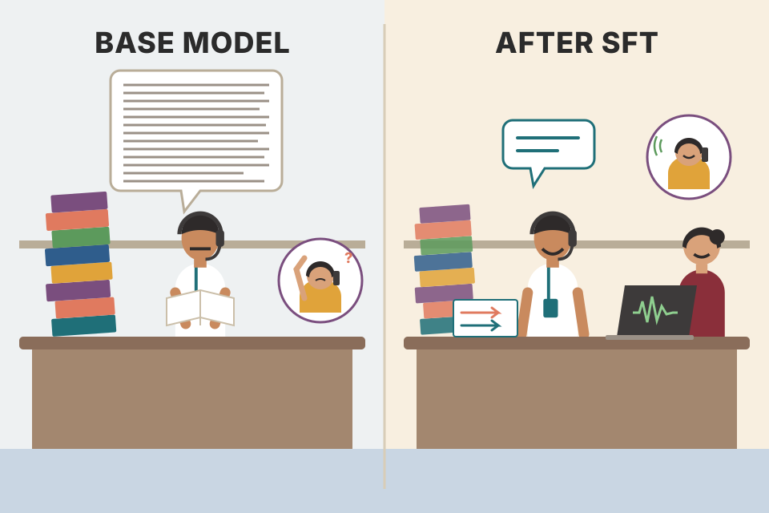
A fresh graduate who has read every textbook in the library joins a call centre. He knows a lot, but on day one he answers a customer by reciting the next page of a manual. SFT is the two-week training where seniors play recorded calls: "customer says this → you say that". After it, he answers in the company's script and style. Where it breaks: the training calls mostly teach how to answer; they can't easily give him knowledge he never read (see plate 16 on new knowledge).
The loss function does not change: SFT still uses next-token prediction. What changes is the data. Every training sequence now has the shape "instruction, then answer", wrapped in a fixed template. After thousands of these, the most likely continuation of "instruction + assistant header" becomes "a helpful answer + end token". Same objective, different examples, different behaviour.
"What is SFT and why do we need it?" → "Pre-training gives a model knowledge but only a next-token habit. SFT trains it further on instruction–answer pairs inside a chat template, with the same next-token loss, so it learns to reply in a format and to specialise on a task or domain. It sits between pre-training and preference alignment like DPO or RLHF."
- Ch.3: the crawled articles we turn into instructions (plate 13).
- Ch.6: the step after SFT.
- Other books: Hands-On LLMs Ch.12 Fine-tuning generation models · AI Engineering Ch.7 Finetuning.
The hardest part is the data, not the training
For most projects, building the instruction dataset is the most difficult step of fine-tuning. Three reasons:
- Most use cases have plenty of raw text (documents, articles, tickets), but natural instruction–answer pairs are rare.
- So the raw text must be transformed into a format that has both an instruction and an answer.
- Quality is crucial, so people spend a lot of time manually checking individual samples to make sure the dataset is accurate and useful.
The section first gives a general framework that works for any use case, then applies it to the data scraped in Chapter 3.
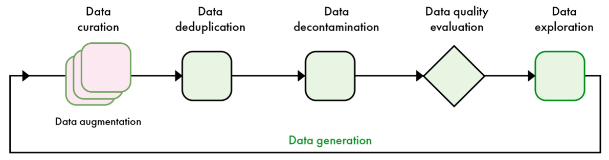
How to read this figure. Go left to right: data curation (the stacked pink cards = several source datasets, with data augmentation written under them) → deduplication → decontamination → data quality evaluation (a diamond, because it is a keep/drop decision) → data exploration. The long line underneath, labelled data generation in green, runs from exploration back to the start: when exploring shows a gap, you generate new data and run it through the pipeline again. It is a loop, not a one-shot conveyor belt. Plates 5–12 walk through each box in order.
Follow 10 toy samples through each stage of Figure 5.1.
Sample counts are modelled, not from the book.
A kirana shop owner sorting rice before selling it: collect sacks from several farms (curation), remove repeated sacks with the same lot number (dedup), set aside the sack the food inspector will sample so it doesn't get mixed in (decontamination), check grain quality (evaluation), and look through a handful to see what's missing (exploration). If basmati is short, order more (generation). Where it breaks: rice sacks don't change when you look at them; with LLM data, augmentation actively rewrites samples to make them harder.
A model fine-tuned on a few thousand examples copies them closely: their style, their mistakes, their gaps. Bad samples are not "averaged out" the way they might be in a pre-training corpus of trillions of tokens. That is why the pipeline is mostly about removal and inspection, and why it loops.
"Walk me through how you'd build a fine-tuning dataset." → "Curate from existing sources, apply rule filters (length, keywords, format), deduplicate exactly and fuzzily, remove anything overlapping my eval set, score quality with an LLM judge or classifier, then explore it by hand and with topic clustering. Where clusters are thin I generate synthetic data and run it through the same pipeline again."
- Plates 3–12 (each stage). Plate 13–14 (the book's concrete run).
- AI Engineering Ch.8 Dataset engineering covers the same pipeline in more depth.
What an instruction sample is, and what "high quality" means
An instruction dataset is a list of instruction–answer pairs. The instruction is the model's input; it is the context during fine-tuning. The answer is the output we expect. You can choose to compute the training loss on both instruction and answer, or on the answer only.
Pairs follow a template. Some, like Alpaca, add extra fields such as inputs and system; both are really sub-parts of the instruction:
- inputs: the data the model needs to do the instruction (the text to summarise, the list of words…).
- system: a meta-prompt that steers the model's general behaviour (tone, persona, rules).
The book shows a sample from the Open-Orca/SlimOrca dataset (Table 5.1) with three parts. Here is a sample of the same shape written for this page:
| Field | Content (our own example, same structure as Table 5.1) |
|---|---|
| System | You are a patient tutor. Always explain your answer, and use words a ten-year-old knows. |
| Instruction | Words: train, platform, ticket. Make one sentence that uses all three. |
| Output | Riya showed her ticket to the guard and ran down the platform just before the train left. |
The system field sets behaviour (helpful, explains, speaks simply). The instruction field carries both the data (the words) and the task (build a sentence). The output is the expected answer; it is not the only correct answer, but it is a high-quality one.
To build a dataset, collect samples that look like how the model will really be used, then filter to keep only high-quality ones. The book defines quality along three dimensions:
The rest of the section gives techniques to filter and evaluate samples on these three dimensions.
Try it · which tokens does the model learn from?
Highlighted tokens count toward the loss. Tokenisation is simplified to words (modelled).
A cricket coach's notebook: "Situation: last over, 12 needed, yorker coming (instruction). What a good batsman does: … (answer)". The coach's general rules on the front page ("stay calm, watch the ball") are the system prompt. Where it breaks: a coach can explain why; the dataset only shows what, so the model must infer the why from many examples.
"Answers only" means the loss ignores the instruction tokens (their labels are masked). The model still reads the instruction as context, but it is not graded on predicting it. This focuses learning on producing answers. Training on both adds signal about what user text looks like, which some setups find useful. The book leaves it as a choice.
"Should the loss include the prompt?" → "Usually mask the prompt and train on completions only, so the model's capacity goes to producing answers rather than modelling user text. It's a choice, not a rule; with very short answers, including prompts adds signal. And whatever you do, quality beats quantity: accuracy, diversity and complexity."
- Plate 17 (how these fields are stored on disk), plate 18 (how they become one token string).
How many samples do you need?
The Hugging Face Hub hosts many instruction datasets, general-purpose and task- or domain-specific. On a new use case, look for related open-source datasets first. This matters most when you have too few samples (for example under 1,000) and need to top them up with high-quality data.
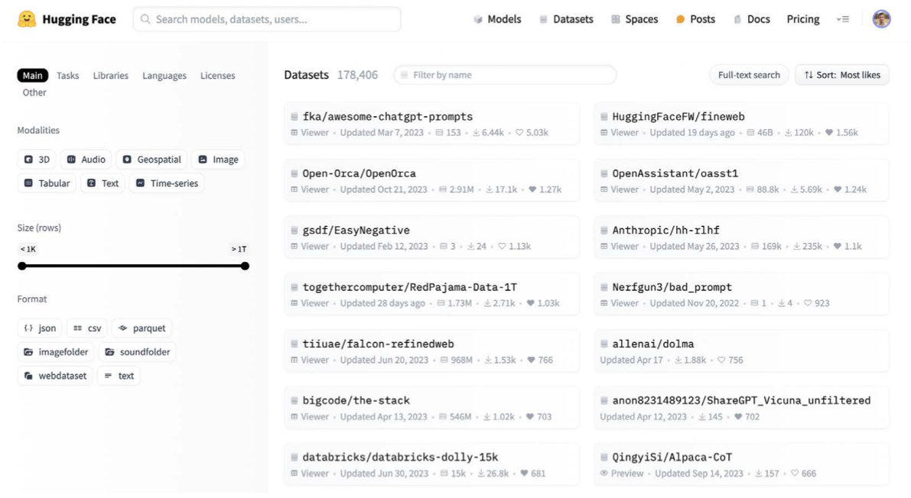
How to read this figure. Left panel: filters by modality (text, image, audio, tabular…), size in rows (a slider from under 1K to over 1T) and file format (json, csv, parquet…). Right panel: datasets sorted by Most likes (178,406 datasets at the time). You see names like Open-Orca/OpenOrca, OpenAssistant/oasst1, Anthropic/hh-rlhf, databricks/databricks-dolly-15k, bigcode/the-stack, each with its row count, downloads and likes. The point: before creating data, search here.
There is no exact formula: both data quality and model size change the answer a lot.
- Large models (~70B parameters): as few as 1,000 high-quality samples can be enough (the LIMA paper).
- Smaller models (~7B): need more, just to learn the chat template correctly.
- In every case quality is crucial, and more samples is always nice to have.
The book splits fine-tunes into two kinds and gives real numbers:
| Type | Examples from the book | Samples |
|---|---|---|
| General-purpose (reproduce GPT-like abilities; more topics → more data) | 01-ai's Yi models: under 10,000. Meta, Llama 3: 10 million across the whole fine-tuning process (including preference alignment). Open source OpenHermes, Dolphin: about 1 million. | book recommends ≥ 1M |
| Task-specific (translation, summarisation, sentiment…) | Focused on one function; works even with small models (typically under 8B parameters). | 100 – 100,000 |
| Domain-specific (medicine, law, finance, e-commerce, engineering, hospitality) | Medicine/law may need as much as general-purpose (vast technical corpora). E-commerce/hospitality need fewer, closer to task-specific. | varies widely |
For domain models, two things decide how much data you need: (1) the "size" of the domain, meaning how much specialised knowledge and vocabulary it has, and (2) how well the domain is already represented in the pre-training data. Well-represented domains need less fine-tuning. A catch: even for open-weight LLMs, the pre-training data is often closed, so you have to make educated guesses about its mix (e.g. "30% code, 20% math").
Try it · rough dataset size from the book's ranges
Training a new cook. An experienced chef (70B model) learns your restaurant's dosa style from a few dozen demos. A beginner (7B) first needs many demos just to learn the kitchen's routine of where plates go. A general cook who can do every cuisine needs months; a dosa-only cook needs days. Where it breaks: cooks can ask questions; a model can only learn from what's in the dataset.
SFT mostly reshapes knowledge the model already has. A bigger model has more of it and generalises the pattern from fewer examples. A domain the model barely saw in pre-training is not "reshaping" any more, it is teaching new facts, which needs far more data (and has risks, plate 16).
"How much data do I need to fine-tune?" → "Depends on scope and model size. Narrow tasks: hundreds to tens of thousands of good examples. Domain adaptation: depends on how big the domain is and how well pre-training covered it. A general chat model: around a million. LIMA showed 1,000 excellent samples can work on a 70B model, but small models need more just to learn the template."
- Plate 14: the book's own dataset is only 3,335 pairs, so plate 32 tops it up with 10,000 FineTome samples, exactly the "too few samples" case.
Where the data comes from (and when to just use few-shot prompts)
Task-specific curation usually means collecting examples of the task from existing datasets or making new ones: pairs of original + summarised texts for a summariser, sentences in two languages for a translator.
Domain-specific curation is harder. It often needs subject-matter experts to collect and check texts, research papers and technical documents, and sometimes partnerships with organisations that hold large specialised archives. The data's quality and relevance directly decide how well the model will understand and write in that domain.
Few-shot prompting has become an alternative to fine-tuning, especially for task-specific uses: you put a few examples of the task directly into the prompt of a large, strong model. It does not replace fine-tuning everywhere (for example, when you want the model to learn a new domain), but it can adapt a model to a new task without extra training.
The line between task and domain can blur: a model fine-tuned for medical diagnosis is both task-specific (diagnosis) and domain-specific (medicine). What matters is knowing the primary goal and shaping the approach around it.
At this point you have a set of datasets for your use case. Next come four refinement steps: rule-based filtering, deduplication, decontamination, quality evaluation.
| Few-shot prompting | Fine-tuning | |
|---|---|---|
| Data needed | a handful of examples in the prompt | hundreds to millions of pairs |
| Training | none | GPU hours |
| Good for | new tasks on a strong model | new domains, fixed style/format, smaller models |
| Per-request cost (beyond the book) | longer prompts every call | short prompts, model carries the behaviour |
Few-shot is showing a temporary helper three filled-in railway reservation forms before he fills the fourth. Fine-tuning is sending him on a week-long IRCTC course. For one odd form, the examples are enough. For a whole new department (domain), you need the course. Where it breaks: the helper remembers the examples after the shift; the model forgets them the moment the prompt ends.
Few-shot works through in-context learning: the examples sit in the attention window and steer the output, without touching weights. That is enough to show a format, but not to store a large body of domain knowledge, which is why the book keeps fine-tuning for domains.
"Fine-tuning or few-shot?" → "Start with few-shot and RAG: zero training cost, easy to change. Move to fine-tuning when the prompt gets long and expensive, the format must be rock-solid, latency matters, or I want a smaller model to do what a big model does with examples."
- Plate 16 (when to fine-tune) · AI Engineering Ch.5 Prompt engineering · Hands-On LLMs Ch.6.
Cheap, explicit rules that throw out obvious junk
Rule-based filtering checks each sample against explicit, pre-written rules and removes the ones that fail. Rules can be simple checks or more complex logic. The goal is to keep data quality high by dropping samples that miss specific criteria. The book names three common rules:
- Fast and scalable over huge volumes.
- Consistent: the same rule for every sample, less human error and bias.
- Transparent: explicit criteria are easy to understand, audit and change.
- Automatable: less manual work, continuous quality monitoring.
- Rules lack nuance; valid but unusual samples can be removed.
- Pass/fail is binary, while quality is not.
- Rules need regular review as data and standards change.
- Badly designed rules can introduce or amplify bias.
Try it · a rule-based filter on 8 toy samples
Samples are invented for this page (modelled). Notice sample 7: a correct but very short answer that a strict length rule wrongly drops, the "valid but unusual" limitation.
# sketch: three rules as plain Python functions (own code, not the book's)
import json
BANNED = {"click here", "free money", "lol"}
def keep(sample):
words = sample["answer"].split()
if not (MIN_WORDS <= len(words) <= MAX_WORDS): # length filter
return False
text = sample["answer"].lower()
if any(term in text for term in BANNED): # keyword exclusion
return False
if sample.get("kind") == "json": # format check
try: json.loads(sample["answer"])
except ValueError: return False
return TrueThe security check at a metro station: a fixed list of banned items, a size limit for bags, a metal detector. Fast, the same for everyone, easy to explain. But it also stops the grandmother carrying a harmless coconut scraper, and it can't tell a polite passenger from a rude one. Where it breaks: the metro list rarely changes; data rules must be updated as your data and standards drift.
Rules are a first, cheap pass that removes the obvious failures so that expensive steps (LLM judges, humans) only see plausible samples. They cost microseconds per sample, so they run on millions of rows. Their weakness is that they test surface features, not meaning.
"How would you clean a 1M-row instruction dataset cheaply?" → "Start with rules: length bounds tuned per task, a keyword blocklist, and format validators such as JSON parsing or compiling code. They're fast, auditable and deterministic. Then deduplicate, and only send what survives to a model-based quality scorer. And watch rejection stats so a bad rule doesn't quietly delete a whole valid category."
- Plate 14: the book's own pipeline has a "data filtering: rules" box (Figure 5.6). · Plate 9: model-based scoring for what rules can't judge.
Removing exact copies, near-copies and same-meaning samples
Diversity is what lets a model generalise to new inputs. Duplicates and near-duplicates hurt in four ways:
- Overfitting: the model memorises specific examples instead of learning general patterns.
- Biased performance: over-represented points tilt the model toward certain kinds of input.
- Inefficient training: repeated data costs training time and adds nothing.
- Inflated evaluation metrics: duplicates inside test sets make scores look better than they are.
1 · Exact deduplication
Three steps: normalise each entry (e.g. lowercase), hash it with an algorithm such as MD5 or SHA-256, then compare hashes and keep one copy of each. It catches identical entries but misses near-duplicates and same-meaning text.
2 · Fuzzy deduplication with MinHash
The most popular fuzzy method is MinHash. It stays accurate while cutting computation a lot. It builds a small signature (a fingerprint) for each item. Steps: turn each document into a set of shingles (overlapping chunks of words or characters), apply many hash functions to the set, keep the minimum hash value from each function; those minimums form the signature vector. Compare signatures with Jaccard similarity (size of overlap ÷ size of union) to find near-duplicates.
3 · Semantic deduplication
This compares meaning. Turn words or whole samples into vectors. Word-level embedding models: Word2Vec, GloVe, FastText. For context-aware, whole-sentence vectors: BERT, sentence transformers, or cross-encoders. Then compare vectors with cosine similarity or Euclidean distance; pairs above a set threshold count as duplicates. For big datasets, cluster the vectors (K-means, DBSCAN, hierarchical clustering), keep one representative per cluster and mark the rest as duplicates.
Try it · exact hash vs MinHash/Jaccard on two sentences
Runs in your browser: a simple string hash stands in for MD5, and seeded random hash functions stand in for MinHash (modelled, a teaching version).
A = "the cat sat on the mat", B = "the cat sat on a mat". Word 2-shingles of A: {the cat, cat sat, sat on, on the, the mat} (5). B: {the cat, cat sat, sat on, on a, a mat} (5). Shared: 3. Union: 7. Jaccard = 3/7 ≈ 0.43. With 1-word shingles: A = {the, cat, sat, on, mat}, B = {the, cat, sat, on, a, mat}: 5/6 ≈ 0.83. Shingle size changes how strict "near-duplicate" is. MinHash estimates this number from short signatures without comparing full sets: the chance that two sets share the same minimum hash equals their Jaccard similarity.
Exact dedup is the Aadhaar number check: two forms with the same number are one person. MinHash is spotting two wedding invitations printed from the same template with one name changed. Semantic dedup is noticing that "kal milte hain" and "see you tomorrow" mean the same. Where it breaks: people use common sense on borderline cases; here a single numeric threshold decides.
Comparing every pair of a million documents is about 5×1011 comparisons. MinHash shrinks each document to, say, 128 numbers, and (beyond the book) is usually paired with LSH (locality-sensitive hashing) buckets so only likely matches are compared. Embedding methods catch paraphrases that share few words, at the cost of running a model over all data.
"How do you deduplicate a large text corpus?" → "Three layers: exact dedup by normalising and hashing; near-dup with MinHash signatures and Jaccard, usually with LSH so it scales; and semantic dedup with sentence embeddings, cosine threshold or clustering, keeping one per cluster. Duplicates cause memorisation, skew, wasted compute and inflated eval scores."
- Plate 8 reuses these same tools for decontamination. · Ch.4: embeddings with sentence transformers. · Hands-On LLMs Ch.5: clustering embeddings.
Keeping the exam questions out of the textbook
Data decontamination makes sure the training set has no samples identical or very similar to those in the evaluation or test sets. Otherwise evaluation scores can't be trusted, and the model may just memorise test data.
It reuses deduplication tools:
- Exact matching (hashes or direct string comparison) removes training samples identical to eval samples.
- Near-duplicate detection (MinHash, or similarity scores on n-grams or embeddings) removes training samples that are very close to eval samples.
The book's tip: add your evaluation set into the instruction data during the deduplication stage. Then dedup naturally finds the overlaps. Just make sure you only ever delete from the instruction side, never the eval side, for example by filtering only the first duplicate or by recording which indexes belong to the eval set. Ideally this happens automatically every run, which is especially handy if you keep iterating on several versions of custom benchmarks.
Decontamination also means removing samples that came from the same source as evaluation data: check for overlapping phrases, similar sentence structure, or shared metadata. Practitioners can use provenance tracking (recording where each piece of data came from) to exclude sources known to be used in eval sets.
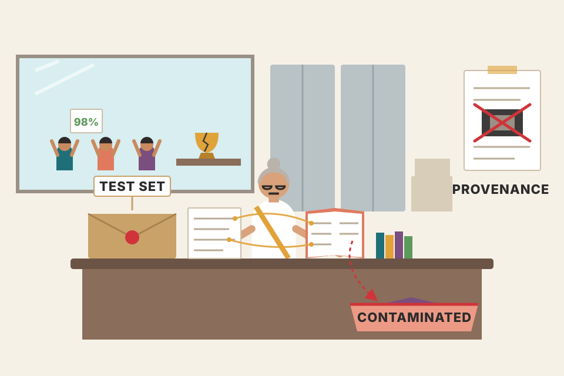
A board exam paper leaks into a coaching centre's practice book. Students score 98%, but it tells you nothing about what they know. Decontamination is the examiner checking every practice book against the real paper, and also banning books from the press that printed the paper (provenance). Where it breaks: exam boards have one paper; you may have many benchmarks, and public benchmarks may already be inside the base model's pre-training data, which you can't clean.
An eval set measures generalisation only if the model has never seen its items. Even paraphrases leak: a model trained on a reworded test question learns its answer. That is why near-duplicate and source-level checks matter, not just exact matching.
"Your fine-tuned model jumped 15 points on the benchmark. What do you check first?" → "Contamination. I'd run exact and fuzzy matching between training data and the benchmark, check data sources for overlap, and look at per-item results for suspicious perfect answers. In the pipeline I put the eval set into the dedup step, only ever deleting from the training side."
- Plate 7 (the tools). · Ch.7 Evaluating LLMs. · AI Engineering Ch.3 (data contamination in benchmarks).
Scoring samples: LLM judges, reward models and small classifiers
Data quality evaluation means measuring accuracy, diversity and complexity. Some things are easy to verify (a math answer can be checked by running Python), but subjective or open-ended content is hard. Human annotation is accurate but expensive, so machine-learning methods automate it: LLMs as judges, reward models, and classifiers trained to predict quality.
LLM-as-a-judge
You prompt an LLM to grade each sample. Popular because it is flexible and easy, but: different LLMs are good at different tasks, and their grades tend to match non-experts more than experts. For domain data you may prefer a domain-specific model over a stronger general one. Comparative grading ("is answer A better than B?") generally beats absolute scoring ("rate A from 1 to 4"), though both work at scale with good prompt engineering. Iterate on prompts over a representative subset and manually check the judge's outputs.
Table 5.2 in the book is an example judge prompt. Its structure: a role line (you are a data quality evaluator), the goal (judge how well the answer addresses the instruction), a request for feedback on strengths and weaknesses, then a 1–4 scale with each level defined (1 = terrible/irrelevant, 2 = not helpful, misses important parts, 3 = helpful but could be more relevant, accurate or deep, 4 = excellent, fully addresses the task), and a fixed output format of Feedback: … then Score: ….
Known biases of LLM judges and the fixes the book gives:
| Bias | What it is | Fix |
|---|---|---|
| Position bias | In A-vs-B grading the judge favours the first answer. | Randomise the order of A and B. |
| Length bias | Like humans, judges prefer longer answers. | Length normalisation in absolute scoring. |
| Intra-model favoritism | Judges prefer outputs from their own family (e.g. GPT-4o liking GPT-4 and GPT-4o mini). | Use several different models. |
To improve reliability in general: use multiple LLMs as a jury (less bias, more consistency). A jury of smaller LLMs can cut cost while raising accuracy and reducing favoritism. For apps like chatbots, aim for about 80% agreement between LLM judges and human evaluators. Simple grading scales (with few-shot examples) and task-specific benchmarks keep evaluations relevant and interpretable.
Try it · position bias and how swapping fixes it
Toy judge (modelled): picks B with probability 0.5 + gap/2 ± bias depending on which slot B sits in.
Reward models
The name comes from RLHF (reinforcement learning from human feedback, Chapter 6). A reward model takes an instruction + answer and returns a score. It is usually made by adding a linear head on top of a decoder-only model like Gemma or Llama, then training it for scoring with reinforcement learning or ordinary fine-tuning.
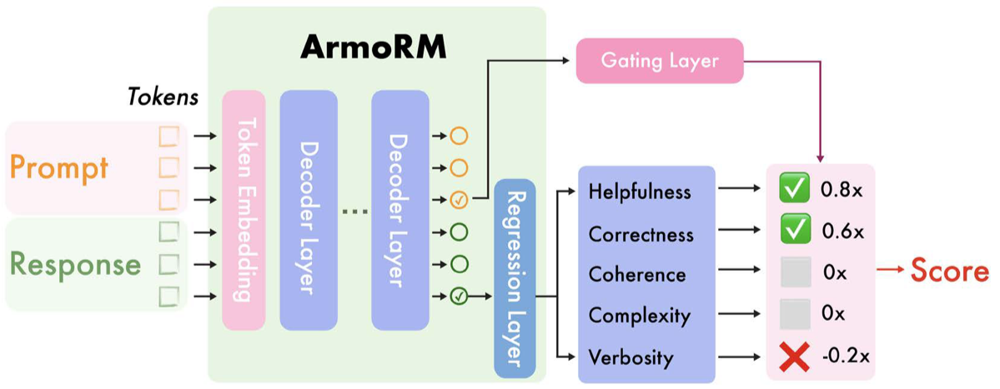
How to read this figure. Left: the prompt tokens and the response tokens enter the green ArmoRM block, go through the token embedding and a stack of decoder layers (that is the Llama 3 8B body). The circles at the right of the decoder are per-token hidden states; the ticked one is the one used. It feeds a regression layer that outputs five separate scores: helpfulness, correctness, coherence, complexity, verbosity. Separately, a pink gating layer (fed from the hidden state too) decides how much each score counts: here 0.8×, 0.6×, 0×, 0×, −0.2×. The weighted sum is the final Score. Note verbosity has a negative weight here: wordiness is penalised.
Try it · ArmoRM-style gated score
The five dimension names and the example gate weights (0.8, 0.6, 0, 0, −0.2) come from Figure 5.3; the dimension scores you set are modelled. In the real model the gate weights depend on the prompt.
The Allen Institute for AI's RewardBench leaderboard on Hugging Face (allenai/reward-bench) compares reward models of many kinds (generative, classifiers, DPO…) on curated sets of chosen and rejected answers. That's not exactly instruction-data quality, but it is a good place to find models that can tell good answers from bad.
Classifiers (encoder-only models)
You can also train a small classifier. Example: HuggingFaceFW/fineweb-edu-classifier judges the educational value of web pages. Built as a quality filter for pre-training data, but the same idea works for instruction samples at scale. Recipe: a classification head on top of the embedding model Snowflake/snowflake-arctic-embed-m, trained for 20 epochs on 450,000 samples annotated by Llama 3 70B Instruct.
Encoder-only models are smaller and suited to classification, so they are fast and scale to millions of samples. But they are less accurate than big models, especially on complex reasoning where nuance matters. They're still useful to filter outliers or in automated pipelines that need speed.
| Method | Cost per sample | Accuracy | Best use |
|---|---|---|---|
| Human annotation | highest | highest | gold labels, checking the others |
| LLM-as-a-judge / jury | medium–high | good, biased | flexible, open-ended quality |
| Reward model | medium | good at good-vs-bad | multi-dimension scores |
| Encoder classifier | low | weaker on reasoning | millions of samples, outliers |
Grading 10 lakh answer sheets. A panel of senior teachers is best but slow (humans). Bright college students with a marking scheme are fast but drawn to long answers and to whoever writes first on the page (LLM judge). A panel of several students averages out their quirks (jury). An OMR scanner is instant but only checks simple things (classifier). Where it breaks: students can be asked why they gave a mark; reward models give a number with no reason.
All three methods are learned approximations of human preference. A judge uses general reasoning through a prompt; a reward model compresses preferences into a head on top of an LLM; a classifier distils labels (often produced by a big LLM, as with fineweb-edu's Llama 3 70B labels) into a small fast model. The trade is always the same: speed vs nuance.
"How do you use LLM-as-a-judge reliably?" → "Prefer pairwise comparisons, randomise answer order to kill position bias, normalise for length, and use a jury of different model families to avoid self-preference. Calibrate against a human-labelled subset; for chat use cases target around 80% agreement. For millions of rows, distil the judge into a small classifier like fineweb-edu."
- Ch.6 (reward models and RLHF) · Ch.7 (judges for model evaluation) · AI Engineering Ch.3 (AI as a judge).
Looking at your data: by hand, with statistics, with clusters
Data exploration is ongoing: you keep getting familiar with the training data. It mixes manual inspection and automated analysis, each revealing the dataset's character, strengths and weak spots.
Manual exploration
Slow but important. It finds errors automation misses: formatting problems, data-entry mistakes, incoherent reasoning, factual errors. It also gives a feel for the content and style. To be efficient: stratified sampling (pick diverse samples), systematic review (use a checklist of criteria), collaborative review (several reviewers).
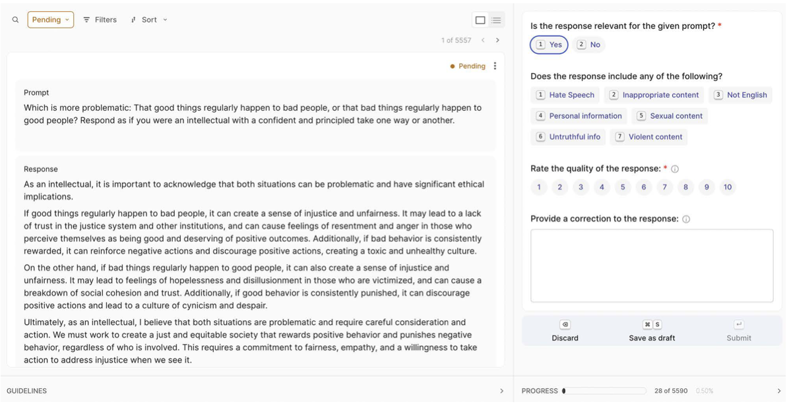
How to read this figure. Argilla is a collaborative annotation tool. Left: one record, with its Prompt and Response, status "Pending" and a counter (1 of 5557). Right: the reviewer's form: is the response relevant (Yes/No)? does it contain hate speech, inappropriate content, non-English text, personal information, sexual content, untruthful info, violent content? a 1–10 quality rating; a free-text box to correct the response; and Discard / Save as draft / Submit buttons. The bottom shows team progress (28 of 5590). This is "systematic review with a checklist" turned into software.
Statistical analysis
Reveals vocabulary diversity, possible biases and how concepts are represented. Use NLP libraries like NLTK or spaCy to tokenise and analyse large text volumes, and Matplotlib or Seaborn for histograms and word clouds. This shows the dataset's composition, language breadth, and cultural or contextual leanings that could shape the model's outputs.
Topic clustering
Topic clustering automatically groups similar texts, showing the themes in the data. It helps you understand large corpora, spot trends and organise information, usually with plots of clusters.
The book's example: you collected programming text from forums, docs and tutorials for an instruction dataset about programming languages. Step 1: clustering finds the languages present (Python, JavaScript…). Step 2: inside each language cluster, find sub-topics like error handling, data structures, web frameworks. Now you can balance the dataset so each topic is covered for each language.
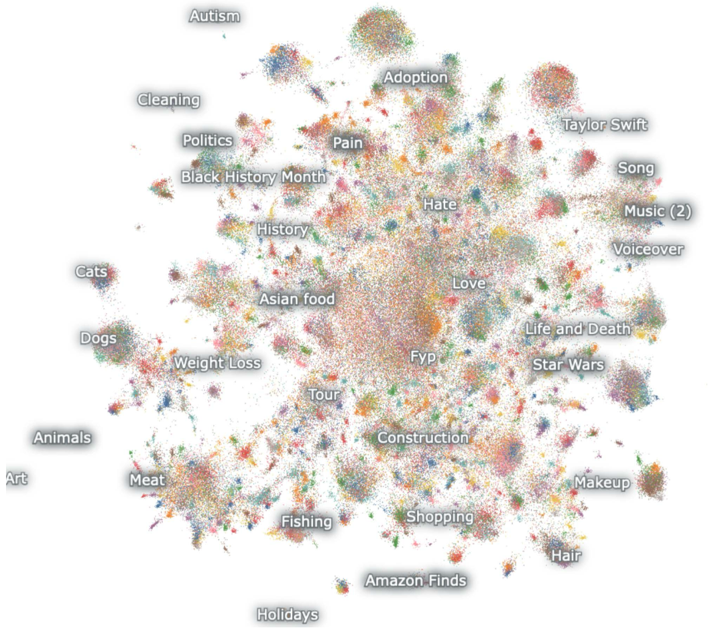
How to read this figure. Every dot is one TikTok text, placed so that similar texts sit close together (embeddings squashed to 2-D). Dense blobs are topics and get an automatic label: Cats, Dogs, Weight Loss, Taylor Swift, Star Wars, Amazon Finds… The big mixed centre (around Fyp, "for you page") is generic content. Small isolated islands at the edge (Art, Holidays) are rare topics. For a dataset builder, the size of each blob tells you what is over- or under-represented.
Tools: Hugging Face's text-clustering gives a simple pipeline: sentence transformers to embed, UMAP to reduce dimensions, DBSCAN to cluster, and an LLM to label clusters automatically, plus visualisations. Alternatives with similar approaches and extra features: Nomic Atlas, BunkaTopics, Lilac.
Try it · balance a programming dataset by cluster
Cluster sizes are modelled. Bars below the target show where to generate data (plate 11); bars above it can be down-sampled.
A wedding caterer checking the menu: tasting a few dishes by hand (manual), counting how many are paneer vs dal vs rice (statistics), and grouping dishes by region to see that there are seven Punjabi dishes and no South Indian one (clustering). Where it breaks: dishes come labelled; text clusters are discovered by a machine and their names are guesses by an LLM.
Topic clustering is embeddings + dimension reduction + density clustering. Embeddings place similar meanings nearby; UMAP keeps neighbourhoods while flattening to 2-D; DBSCAN finds dense regions without needing the number of clusters in advance. The labels are an LLM summarising a few samples per cluster.
"How do you know your training data covers the use cases?" → "Embed every sample, cluster with UMAP + DBSCAN or BERTopic-style tooling, label clusters, and compare cluster sizes with the traffic mix I expect in production. Fill thin clusters with targeted synthetic data, down-sample fat ones, and still read a stratified sample by hand in a tool like Argilla."
- Hands-On LLMs Ch.5 (the same embed → UMAP → cluster pipeline in depth). · Plate 11: fill the gaps.
Synthetic data: asking an LLM to write training samples
When existing instruction datasets are not enough, you create your own. This is common in specialised applications with little public data, and to fill under-represented areas, such as too few JavaScript error-handling examples in the plate-10 example. People can write data by hand or via crowdsourcing, but that is slow and costly. Synthetic data generation with LLMs is faster and scales better, and with well-designed prompts it can produce high-quality data in large volumes.
It usually starts with a set of carefully designed prompts, sometimes called a taxonomy. These are the seeds for new, varied examples. The quality of the output depends mostly on those prompts and the generation technique. Good prompts include specific instructions, examples and constraints so the output fits the desired format and content.
Table 5.3 lists five seed instructions from the original Alpaca dataset. They are deliberately varied: a constrained meal question (breakfast without eggs, high protein, 700–1000 calories), an analogy puzzle ("Night : Day :: Right : Left"), one-line descriptions of three public figures, a task about how a stereotype can cause harm, and writing a subject line for a workshop invitation email. Notice that several have a separate Input part, the Alpaca input field from plate 3.
Typical pipelines have several steps: generate instructions → generate answers → optionally validate with another model or rules (accuracy, relevance, criteria).
- Control attributes: complexity of instructions, answer length, tone/style, topics and domains. Tuning these makes datasets that fit a training goal or fill gaps in existing data.
- Structured generation with libraries like Outlines helps the output respect a format.
- Fix biases and gaps: a careful process can produce more balanced, inclusive data covering more perspectives, topics and language styles, giving models that serve diverse users more fairly.
Challenges:
- Generated data can inherit the generator's biases and errors. Mitigations: human oversight, diverse prompts, extra filtering.
- It must be diverse and challenging enough. Simple, repetitive synthetic data doesn't train a robust model; advanced methods aim for varied, nuanced pairs.
Try it · a taxonomy grid as the generator's to-do list
Modelled: the cost uses an assumed ~600 tokens per generated pair and a placeholder price of $0.6 per 1M output tokens (beyond the book).
A question-paper setter for an entrance exam. Instead of writing 2,000 questions from scratch, she writes a grid: subjects × question types × difficulty, plus five sample questions, and hands it to a team of assistants. The grid guarantees coverage; the samples set the style. Where it breaks: if all assistants learned from the same teacher, they all make the same mistakes, just like synthetic data inheriting one generator's biases.
A generator LLM samples from its own distribution. Without structure, it drifts to its favourite topics and phrasings, so outputs repeat. Seeds, taxonomies and attribute controls push sampling into corners it would not visit on its own. Validation steps catch the errors it confidently produces.
"How would you generate synthetic training data without it all looking the same?" → "Define a taxonomy of topics, task types and difficulty, seed each cell with a few real examples, vary attributes like length and tone, and force structure with JSON mode or a library like Outlines. Then validate with rules and a judge, deduplicate, and check coverage by clustering."
- Plate 12 (augmenting existing data) · plate 13 (the book's own synthetic pipeline) · AI Engineering Ch.8 (data synthesis).
Making existing samples harder and more varied: Evol-Instruct and UltraFeedback
Here data augmentation means raising both the quantity and quality of samples, starting from existing instruction samples (unlike generation, which starts from seeds). You can upsample pairs, but augmentation is mostly used to improve quality, on two axes: diversity and complexity.
Evol-Instruct
A pioneering method that uses LLMs to evolve simple instructions into better ones; strong LLMs then write answers to the evolved instructions. Two strategies:
In-depth evolving makes an instruction more complex:
- Constraints: add requirements or limits so it is harder to satisfy.
- Deepening: replace a shallow question with a deeper one needing a fuller answer.
- Concretizing: replace general concepts with specific ones, adding detail and precision.
- Increasing reasoning steps: explicitly ask for multi-step reasoning.
- Complicating input: add complex data formats or structures (XML, JSON, code snippets).
In-breadth evolving expands diversity: it writes brand-new instructions inspired by existing ones, aiming for rarer, long-tail examples in the same domain.
Our own example instruction, evolved by hand to show each technique (not from the book).
In-depth evolving can be automated with a prompt from the AutoEvol paper (Zeng et al., 2024, "Automatic Instruction Evolving for Large Language Models"), shown as Table 5.4. You pass the instruction to evolve; a strong model such as GPT-4o returns a more complex version. The prompt casts the model as an "Instruction Rewriter" and asks it to work in four steps:
- Read the instruction and list possible methods to make it more complex (harder for well-known assistants), without changing its language.
- Make a plan that combines several of those methods.
- Execute the plan and write the rewritten instruction, adding only 10 to 20 words.
- Review the rewrite for unreasonable parts, making sure it is only a harder version of the original, and output the final instruction with no explanation.
The reply must follow a fixed format with one labelled line per step (methods list, plan, rewritten instruction, finally rewritten instruction).
UltraFeedback
Focuses on answer quality rather than instruction quality. It takes a large pool of diverse instructions and many different models to produce a wide range of responses, then asks a strong model like GPT-4 for detailed critiques and numeric scores on several dimensions: instruction-following, truthfulness, honesty, helpfulness.
From these ideas you can design your own augmentation to make the dataset harder and more varied, so the model learns complex, multi-step tasks and does better on more applications.
| Evol-Instruct | UltraFeedback | |
|---|---|---|
| Improves | instructions (complexity, diversity) | answers (quality, diversity) |
| How | LLM rewrites instructions in depth / in breadth | many models answer; GPT-4 critiques and scores |
| Output | harder prompts, then answers from a strong LLM | scored answers on 4 dimensions |
A cricket net session. In-depth evolving is the coach making the same drill harder: add a fielder (constraint), bowl a bouncer instead of a half-volley (deepening), "play it to cover, not anywhere" (concretizing). In-breadth is inventing new drills: a switch hit, a reverse sweep. UltraFeedback is many batsmen facing the same ball while a senior selector scores each shot. Where it breaks: a coach can tell when a drill has become unfair; the evolve prompt needs its step 4 review to catch nonsense rewrites.
Simple instructions get simple answers, which teach little. Evolving instructions shifts the distribution toward harder problems while keeping the topic; the "add only 10–20 words" limit stops the rewrite from turning into a different task. Scoring many answers (UltraFeedback) gives both a quality filter for SFT and the chosen/rejected pairs that Chapter 6 needs.
"Your SFT data is too easy. What do you do?" → "Evol-Instruct-style augmentation: rewrite instructions in depth with constraints, more reasoning steps, concrete details or structured inputs, and in breadth for long-tail variants; then regenerate answers with a strong model. On the answer side, UltraFeedback-style: sample several models and keep the best-scored answer."
- Ch.6: scored answers become preference pairs. · Plate 14: the book keeps its own dataset simple and leaves these upgrades for Chapter 6.
The plan: articles → chunks → instruction pairs with GPT-4o mini
Now the book builds a real dataset from the articles crawled in Chapter 3 (the LLM Twin's posts and articles). Two problems:
- The data is unstructured. It is raw articles, not instruction–answer pairs. Fix: let an LLM do the conversion, using backtranslation plus rephrasing.
- Backtranslation: start from the expected answer and generate the instruction that would lead to it.
- But a raw paragraph is not always a good answer, so we rephrase the text into a well-formatted, high-quality answer, and ask the model to follow the author's writing style so it stays close to the original.
- This needs a lot of prompt engineering, but it can be automated at scale.
- There are few articles. Common in real projects. The more samples, the better the model imitates the authors. Fix: split articles into chunks and generate several pairs per chunk. (The text here says three pairs per chunk; the code in plate 14 actually asks for five.) This multiplies the sample count while keeping diversity. For simplicity they use OpenAI's GPT-4o-mini, but open-source models also work.
Another snag: LLMs are unreliable at structured output. Even with templates and instructions, they may not stick to the format, so you often need extra string parsing. The fix is structured generation: force the model to follow a template such as JSON, pydantic classes or regular expressions. Here they use OpenAI's JSON mode, which reliably returns valid JSON objects and cuts post-processing.
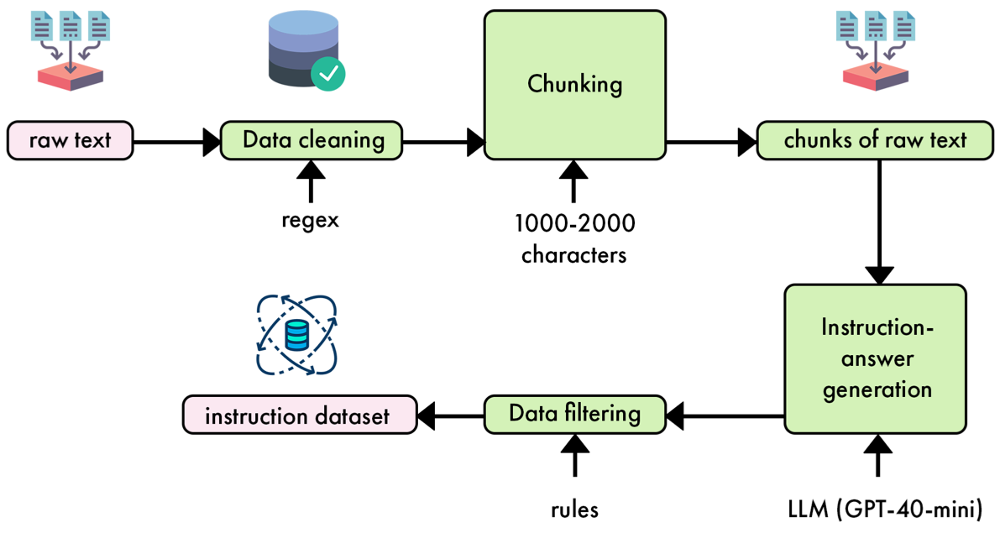
How to read this figure. Top row, left to right: raw text → data cleaning (tool underneath: regex) → chunking (parameter underneath: 1000–2000 characters) → chunks of raw text. Then the arrow turns down to instruction-answer generation (powered by LLM (GPT-4o-mini)) and runs right to left along the bottom: → data filtering (using rules) → instruction dataset. Each box's input from below is the tool or setting it uses. This is a slimmed-down version of Figure 5.1, applied to one real case.
Backtranslation is like playing Jeopardy with a newspaper: you cut out a paragraph (the answer) and write the question someone would ask to get that paragraph. Rephrasing is tidying the clipping so it reads like a proper answer, in the same columnist's voice. Where it breaks: in Jeopardy the answer is fixed; here the LLM rewrites the answer too, so it can drift from what the author actually said.
Generating an instruction from a known answer is much easier for an LLM than writing a good answer from scratch, because the facts are already in the context. That is why a cheap model is enough: the output is grounded in the chunk. JSON mode constrains decoding so the output always parses, removing a whole class of pipeline failures.
"You have 80 blog posts and want a model that writes like the author. How do you get training data?" → "Chunk the posts, and for each chunk have an LLM backtranslate: write instructions whose answers are that chunk, rephrased in the author's style. Several pairs per chunk multiplies the data. Use JSON mode or structured outputs so parsing never breaks, then filter with rules and spot-check."
The Python pipeline, step by step (3,335 pairs for under $0.50)
The pipeline can run inside the LLMOps pipeline or as a standalone script. The snippets below are shortened, renamed versions of the book's eleven steps.
Steps 1–2 · libraries
Pinned versions in the book: openai==1.37.1 (talk to the model), datasets==2.20.0 (Hugging Face dataset format), tqdm==4.66.4 (progress bar). Imports also include concurrent.futures, json, random, re, typing, and pydantic.
Step 3 · load the articles
The raw data is a JSON file whose artifact_data list holds articles. The function builds a Hugging Face Dataset with columns id, content, platform, author_id, author_full_name, link. Shown as a pandas table it has 76 rows (index 0–75): Medium posts by Alex Vesa (data pipelines, change data capture, feature stores…) and decodingml.substack.com posts by Paul Iusztin.
def load_articles(path):
rows = json.load(open(path))["artifact_data"]
cols = ["id", "content", "platform", "author_id", "author_full_name", "link"]
return Dataset.from_dict({c: [r[c] for r in rows] for c in cols})Step 4 · clean the text with regex
Some articles contain odd characters and extra whitespace. Two regexes plus a strip: [^\w\s.,!?'] replaces anything that is not a word character, whitespace, or one of . , ! ? ' with a space; \s+ collapses runs of whitespace into one space; strip() trims the ends.
def tidy(text):
text = re.sub(r"[^\w\s.,!?']", " ", text) # drop emojis, symbols, markdown
text = re.sub(r"\s+", " ", text) # many spaces/newlines -> one space
return text.strip()Step 5 · chunk into 1,000–2,000 characters
Ideally you would chunk by headings or paragraphs for meaning. But real raw data is messy, and paragraphs/headings couldn't be extracted for every article. So the code splits into sentences with a regex and glues sentences together until a chunk is between 1,000 and 2,000 characters (tune this to how dense the text is). The sentence regex splits on whitespace after ., ? or !, with look-behinds that avoid splitting inside abbreviations like "e.g." or "Mr.". If adding a sentence would pass the max, the current chunk is saved (only if it has reached the min) and a new chunk starts. A last chunk is kept if it reaches the min.
def make_chunks(texts, lo=1000, hi=2000):
out = []
for doc in texts:
buf = ""
for s in re.split(SENTENCE_RE, tidy(doc)):
if not s.strip(): continue
if len(buf) + len(s) <= hi:
buf += s.strip() + " "
else:
if len(buf) >= lo: out.append(buf.strip())
buf = s.strip() + " " # note: a short leftover buffer is dropped here
if len(buf) >= lo: out.append(buf.strip())
return outTry it · the chunker on a toy article
Scaled down 1:~7 so it fits on screen (the book uses 1,000/2,000). Same algorithm. Red rows are text that the algorithm drops because a chunk was flushed while still under the minimum.
Step 6 · a small class to parse the model's JSON
InstructionAnswerSet holds a list of (instruction, answer) tuples, can be built straight from a JSON string (reading the instruction_answer_pairs list), and is iterable.
class PairSet:
def __init__(self, pairs): self.pairs = pairs
@classmethod
def from_json(cls, raw):
items = json.loads(raw)["instruction_answer_pairs"]
return cls([(i["instruction"], i["answer"]) for i in items])
def __iter__(self): return iter(self.pairs)Step 7 · the generation prompt
This step works with any open or closed model. Because the output is grounded in the given chunk, it doesn't need strong reasoning, so GPT-4o mini is chosen for low cost and good performance. Prompt engineering is the most important part here and takes several iterations: start simple, add complexity only when needed (accuracy, style, multiple outputs).
The goal is instructions like "Write a paragraph about X" with factual answers in the writer's style. For efficiency, each extract produces five pairs. The book's prompt asks the model to:
- generate five instruction–answer pairs from the extract;
- make each instruction ask to write about a specific topic from the context, and each answer a relevant paragraph based on it;
- use only concepts from the context;
- never mention "a context, a system, a course, or an extract" in instructions; keep them self-contained and general;
- imitate the writing style of the context in answers;
- follow one example pair (explaining what an LLM Twin is);
- reply in a given JSON structure:
{"instruction_answer_pairs": [{"instruction": …, "answer": …}, …]}, then the extract.
Step 8 · the API call
A system prompt repeats the high-level task (you generate instruction-answer pairs from the given context, in JSON). The call uses gpt-4o-mini, JSON mode, at most 1,200 tokens of output and a standard temperature of 0.7 for some diversity. The reply is parsed directly by the class from step 6.
resp = client.chat.completions.create(
model="gpt-4o-mini",
messages=[{"role": "system", "content": SYSTEM_TASK},
{"role": "user", "content": build_prompt(chunk)}],
response_format={"type": "json_object"}, # JSON mode: output always parses
max_tokens=1200,
temperature=0.7,
)
pairs = PairSet.from_json(resp.choices[0].message.content).pairsSteps 9–10 · run it in parallel
A function chunks the dataset and sends every chunk to the generator with a ThreadPoolExecutor, collecting results as they finish (as_completed, wrapped in tqdm). Default 4 workers: more tends to hit OpenAI rate limits and cause failed or throttled requests. Finally it unzips the pairs into a Dataset with columns instruction and output. Running over all the raw data with GPT-4o mini costs under $0.50.
with ThreadPoolExecutor(max_workers=4) as pool: # 4 = stay under rate limits
jobs = [pool.submit(gen_pairs, c, client) for c in chunks]
for job in tqdm(as_completed(jobs), total=len(jobs)):
all_pairs.extend(job.result())
ins, outs = zip(*all_pairs)
ds = Dataset.from_dict({"instruction": list(ins), "output": list(outs)})Step 11 · main: load → generate → split → push
The main function loads cleaned_documents.json, builds the instruction dataset, makes a 90/10 train/test split (test_size=0.1) and pushes it to the Hub as mlabonne/llmtwin. Result: a dataset with features ['instruction', 'output'] and 3,335 rows.
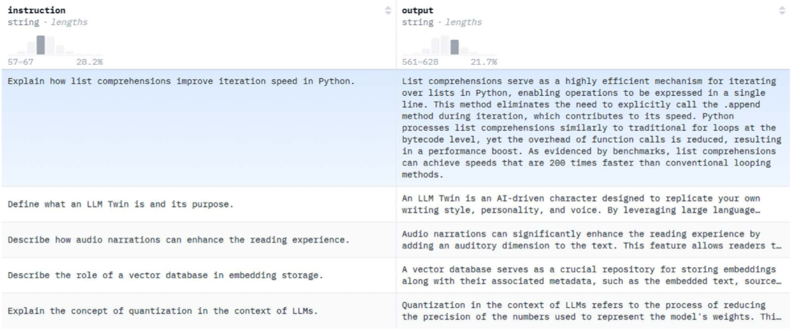
How to read this figure. The Hub's dataset viewer: two string columns, instruction and output, each with a small length histogram on top (most instructions are short; outputs are a paragraph long). Rows show the backtranslated style: "Define what an LLM Twin is and its purpose", "Describe the role of a vector database in embedding storage", "Explain the concept of quantization in the context of LLMs", each with a paragraph-long answer. You use this viewer to catch obvious mistakes. The dataset is small, so no need for full exploration or topic clustering.
What could be better (the book says so): more diversity and complexity (plate 12), better prompts with examples of expected results, and quality evaluation to drop weak samples. For simplicity they keep it basic and save advanced methods for Chapter 6's preference dataset.
5 pairs per chunk means roughly 3,335 ÷ 5 ≈ 667 chunks. Spread over 76 articles that is about 9 chunks per article, or roughly 9 × 1.5k ≈ 13–14k characters (about 2,000 words) per article on average. After the 90/10 split: about 3,000 training and 335 test rows. (Back-of-envelope, modelled from the book's totals; some chunks may return fewer pairs.)
A tiffin service: wash the vegetables (clean), cut them into same-size pieces (chunk), four cooks work at once because the gas line can only feed four burners (rate limit = 4 workers), every box goes into the same standard container (JSON mode), then 10% of boxes go to the tasting table (test split). Where it breaks: more burners would just mean more food; more workers here get your requests rejected.
The job is I/O-bound (waiting for API replies), so threads give near-linear speed-up until the provider's rate limit. Grounding each call in one chunk keeps outputs factual and cheap. Pushing to the Hub makes the dataset versioned and loadable by name in the training step.
"How do you run 10k LLM calls for a data job?" → "Thread or async pool sized to the provider's rate limit, retries with backoff on 429s, structured outputs so parsing can't fail, per-item error capture so one bad chunk doesn't kill the run, and a progress bar plus cost tracking. Store the result as a versioned dataset with a held-out split."
- Plate 17: this dataset is in Alpaca format. · Plate 32: it is loaded by name and mixed with FineTome.
What SFT is for
SFT re-trains a pre-trained model on a smaller dataset of instruction–answer pairs. The goal: turn a base model that only predicts the next token into a useful assistant that answers questions and follows instructions. SFT can also:
- improve the base model's general performance (general-purpose SFT);
- add new knowledge (new languages, domains…);
- focus on specific tasks;
- adopt a particular voice (like the LLM Twin).
This section covers when to fine-tune, storage formats and chat templates, and the three popular ways to do SFT: full fine-tuning, Low-Rank Adaptation (LoRA) and Quantization-aware Low-Rank Adaptation (QLoRA).
A base model is a person who has read every book but never had a job. SFT is the job training: it can make them a general office assistant, teach them Tamil, make them a GST specialist, or teach them to write emails in their boss's voice. Where it breaks: job training is good at habits and style; it is weak at installing lots of brand-new facts (next plate).
"Name the main SFT methods." → "Full fine-tuning updates all weights: best quality, biggest memory, risk of forgetting. LoRA freezes the weights and learns small low-rank adapters. QLoRA does the same on a 4-bit quantised base to save more memory at some speed cost."
- Plates 16–22.
Prompt first; fine-tune only when prompting falls short and you have data
In most cases, start with prompt engineering, not fine-tuning. Prompting works with both open-weight and closed models. Techniques like few-shot prompting or RAG (retrieval-augmented generation) solve many problems without SFT. Prompting also lets you build a solid evaluation pipeline that tracks accuracy and also cost and latency. If the results miss your requirements, consider building an instruction dataset (as in plates 13–14). If you have enough data, fine-tuning becomes an option.
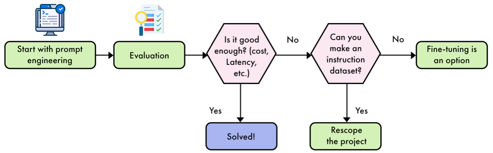
How to read this figure. Start top-left: Start with prompt engineering → Evaluation → hexagon "Is it good enough? (cost, latency, etc.)". Yes → Solved! (blue, you stop here). No → hexagon "Can you make an instruction dataset?". In the printed figure the labels on that second hexagon read Yes → Rescope the project and No → Fine-tuning is an option, which looks swapped: the text says fine-tuning is the option when enough data is available. Read it as: can build a dataset → fine-tune; cannot → rescope.
Try it · walk the flowchart for your case
Beyond technical reasons, SFT gives control ("know your data") and customisability (your fine-tuned model is unique). Instead of building everything around a chatbot, fine-tuning lets you build more varied LLM interactions such as tool analytics, moderation, and additional context. The book focuses on open-weight models, but several LLM providers offer automated fine-tuning services. They give less control and customisability than your own pipeline, but can be a good trade-off, e.g. when you have little ML engineering capacity.
Limitations. SFT is generally understood to reuse knowledge already in the base model's weights and refocus the parameters on a purpose. Consequences:
- Knowledge far from pre-training (an unknown or rare language) is hard to learn well.
- A study found that fine-tuning on new knowledge can increase hallucinations.
- Depending on the technique, you may erase knowledge the base model had: catastrophic forgetting.
Before hiring a full-time accountant (fine-tuning), try giving your current clerk a good checklist and the right files on his desk (prompting + RAG). Only if he still can't meet deadlines, and you have enough past ledgers to train someone, do you hire and train. Where it breaks: a trained accountant doesn't forget how to read; an over-trained model can lose general skills.
A small SFT dataset can only nudge billions of weights a little. That's enough to change behaviour (format, style, task focus), which mostly reuses existing internal features. Writing many new facts needs larger changes; with few examples the model learns to sound confident about the new area without truly storing it, which is one explanation for more hallucination.
"When would you fine-tune instead of RAG?" → "RAG for knowledge that changes or must be cited; fine-tuning for behaviour: format, tone, a narrow task, or getting a small cheap model to match a big one on latency or cost. I'd first build an eval set and a prompted baseline. Fine-tuning new facts in is weak and can raise hallucinations." In a realtime voice agent, for example, a fine-tuned small model can cut latency while RAG still supplies the facts.
- Ch.4 and Ch.9 (RAG) · AI Engineering Ch.7 (finetuning vs RAG, in depth).
How samples are stored: Alpaca, ShareGPT, OpenAI and friends
Each sample is usually a Python dictionary: keys are prompt types (system, instruction, output…), values are the text. Files are usually JSONL (one JSON object per line). The three most standard formats are Alpaca, ShareGPT and OpenAI; Table 5.5 also lists OASST and raw text:
| Name | JSONL shape |
|---|---|
| Alpaca | {"instruction": "...", "input": "...", "output": "..."}or {"instruction": "...", "output": "..."} |
| ShareGPT | {"conversations": [{"from": "...", "value": "..."}, …]} |
| OpenAI | {"conversations": [{"role": "...", "content": "..."}, …]} |
| OASST | {"INSTRUCTION": "...", "RESPONSE": "..."} |
| Raw text | {"text": "..."} |
- In Alpaca,
inputis optional; when present, it is appended to the instruction. - Raw text is listed to show SFT is not fundamentally different from pre-training. Re-training on raw text is a kind of fine-tuning usually called continual pre-training.
- The dataset from plate 14 has two columns (instruction, output), so it is Alpaca. Alpaca is enough for single-turn data (one instruction, one answer).
- For multi-turn conversations, use ShareGPT or OpenAI: each message is a dictionary in a list, so one sample can hold an arbitrarily long conversation.
- Single-turn vs multi-turn decides the storage type, and depends on your use case.
Try it · one conversation, three storage formats
Beyond the book: ShareGPT usually uses from values system/human/gpt; OpenAI's own fine-tuning files use a top-level messages key, while many open datasets in "OpenAI style" use conversations as in Table 5.5.
Alpaca is a single-question exam answer sheet: one question box, one answer box. ShareGPT/OpenAI is a WhatsApp chat export: a list of messages, each tagged with who sent it, as long as you like. Where it breaks: you can squeeze a chat into Alpaca by pasting history into "input", but you lose the clear turn structure the template needs.
Storage format and chat template are two separate layers. The format is how data sits on disk; the template (next plate) is how it is turned into one token sequence for the model. Libraries map formats to roles (instruction → user, output → assistant) and then apply the template.
"Alpaca vs ShareGPT?" → "Alpaca is flat instruction/input/output, fine for single-turn. ShareGPT or OpenAI-style store a list of role-tagged messages, needed for multi-turn chat and system prompts. Raw-text format is continual pre-training, same loss, no structure."
- Plate 18 (templates) · plate 32 (the book maps Alpaca data to an Alpaca template).
Turning messages into the exact string the model sees
After parsing a sample from its storage format, you lay it out with a chat template: one unified way to present instructions and answers. Templates usually include special tokens marking the start and end of a message and who wrote it.
- Base models have no chat template (they were never taught to follow instructions), so when fine-tuning a base model you can pick any template.
- If you fine-tune an instruct model (the book doesn't recommend it), use its existing template, or performance may drop.
There are many templates: ChatML, Llama 3, Mistral and more. ChatML (originally from OpenAI) is popular in open source. It adds just two special tokens, <|im_start|> and <|im_end|>, around each message. The speaker is a plain string (system, user, assistant) right after the start token, not a special token. Table 5.6 applies ChatML to the Table 5.1 sample; here is our own plate-3 sample in the same layout:
<|im_start|>system
You are a patient tutor. Always explain your answer, and use words a ten-year-old knows.<|im_end|>
<|im_start|>user
Words: train, platform, ticket. Make one sentence that uses all three.<|im_end|>
<|im_start|>assistant
Riya showed her ticket to the guard and ran down the platform just before the train left.<|im_end|>Three parts (system, user, assistant), each wrapped in start/end tokens. This exact string is what gets tokenised and fed to the model during fine-tuning.
At inference you don't have the answer. You send the system and user parts (the book says "as shown in Figure 5.6"; it means Table 5.6) and end with <|im_start|>assistant\n. Because the model was trained on this layout, it knows the next tokens should be an answer to the user, guided by the system prompt. That is how fine-tuned models get instruction-following.
Every whitespace and line break matters. One added or missing character changes tokenisation and hurts performance. So use reliable templates written in Jinja, as implemented in the Transformers library. Jinja supports loops and conditions, so the same template serves training and inference (the add_generation_prompt option appends the assistant header). Table 5.7 shows common templates; the widget below renders our own question in each of them.
Try it · the same Q&A in five chat templates (Table 5.7 formats)
Special-token strings follow Table 5.7. The question/answer is our own. Token counts are word-ish estimates (modelled), not a real tokenizer.
Train with <|im_start|>assistant\n but at inference send <|im_start|>assistant (no \n). The model has never seen "assistant" followed directly by answer text, so its first predicted token is often a newline, or it drifts into odd output. Same weights, worse answers, just from one character. This is why the book says to use the tokenizer's Jinja template (in Transformers, tokenizer.apply_chat_template(messages, add_generation_prompt=True)) instead of hand-building strings.
A chat template is the format of an Indian Railways ticket: PNR here, passenger name there, coach and berth in fixed boxes. A TTE (the model) reads tickets fast because the layout never changes. Shift one box and he reads the berth as the coach. Where it breaks: a TTE can guess; a tokenizer just produces different tokens.
Special tokens like <|im_end|> or <|eot_id|> are single vocabulary entries. Learning to emit them is how the model learns to stop. The role header is the "cue": after assistant\n the training data always contained an answer, so the model predicts one.
"Why does my fine-tuned model ramble or never stop?" → "Usually a template mismatch: EOS or end-of-turn token missing from training samples, or inference using a slightly different template or whitespace than training. Fix by using the tokenizer's Jinja chat template for both, with add_generation_prompt at inference, and by making sure the end token is in the labels." In an LLM gateway serving several open models, per-model templates are exactly this concern.
- Plate 32 (manually adding EOS to Alpaca samples) · Ch.8 · Hands-On LLMs Ch.12 (templates in practice).
Three ways to do SFT: change everything, add a small side-path, or add it on a compressed model
The research literature has many SFT methods, but practice has settled on three main techniques: full fine-tuning, LoRA and QLoRA. The book introduces each one and weighs their pros and cons for different use cases (plates 20–22). Strictly, only LoRA and QLoRA are parameter-efficient fine-tuning (PEFT) methods: they train a tiny fraction of the weights. Full fine-tuning is the baseline they are compared against.
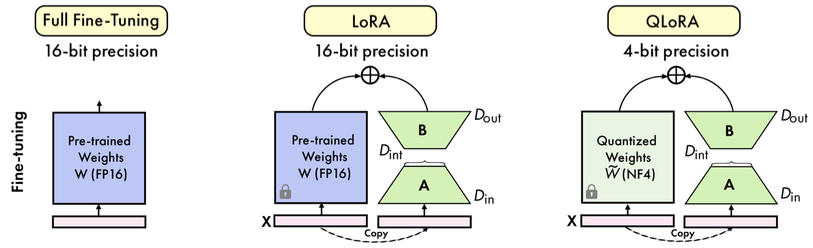
How to read this figure. Each panel is one layer (a "module", e.g. a single attention projection) seen during fine-tuning. The pink bar at the bottom is the input X, the arrow up is the output. Left, full fine-tuning (16-bit): one blue block, the pre-trained weights W in FP16; no padlock, so every number in it is trained. Middle, LoRA (16-bit): the same blue W now has a padlock (frozen). Beside it are two green trapezoids: A squeezes the input from width Din down to a small inner width Dint (the rank r), and B widens it back to Dout. The dashed "Copy" arrow shows the same X going into both paths; the ⊕ at the top adds the two outputs. Only the green parts learn. Right, QLoRA (4-bit): identical to LoRA, except the frozen block is now pale green and labelled W̃ (NF4): the base weights are stored quantized in 4-bit NormalFloat. The adapters A and B themselves stay in 16-bit.
Try it · what trains, what is frozen, and how it is stored
Redrawn from Figure 5.9 for one 4096×4096 projection with r = 16 (sizes modelled from Llama-3-8B's hidden size).
| Full fine-tuning | LoRA | QLoRA | |
|---|---|---|---|
| Base weights W | trained, 16-bit (or 32-bit) | frozen, 16-bit | frozen, 4-bit NF4 |
| What learns | every parameter | small A and B per targeted module | small A and B per targeted module |
| Memory (book's figures) | ~16 bytes/param → 112 GB for 7B | 14–18 GB for a 7B model | up to 75% less peak than LoRA; 9.3 GB vs 15.6 GB in training |
| Speed | slowest (and needs several GPUs) | fast | ~30% slower than LoRA |
| Quality | often the best | comparable, sometimes better | only minor differences vs LoRA |
| Destroys old knowledge? | can (catastrophic forgetting) | no, W untouched | no, W untouched |
You want a Mumbai dabbawala network to also deliver to a new IT park. Full fine-tuning re-trains every dabbawala and rewrites every route: best fit, huge effort, and some old routes may get forgotten. LoRA keeps all old routes exactly as they are and adds a small team of new runners who only handle the detour. QLoRA does the same, but first squeezes the giant route book into a pocket-sized shorthand edition so it fits in one bag. Where it breaks: the shorthand route book is read back to full detail every time it's used (de-quantisation), which is where QLoRA's extra time goes.
All three use the same objective, next-token prediction on the instruction data. They differ only in which numbers get gradients and how the frozen numbers are stored. Fewer trained numbers means fewer gradients and optimizer states, which is where most training memory goes (plate 20).
"Full fine-tuning vs LoRA vs QLoRA in one breath?" → "Full fine-tuning updates all weights: best ceiling, about 16 bytes per parameter of memory and a forgetting risk. LoRA freezes W and learns a low-rank update BA on chosen layers, cutting trainable parameters to well under 1%. QLoRA does LoRA on a 4-bit NF4 base: much less memory, about 30% slower, near-identical quality."
- Plates 20–22 (each method) · plate 32 (the book picks LoRA) · Ch.8 (quantization for inference) · AI Engineering Ch.7 (PEFT families) · Hands-On LLMs Ch.12 (LoRA/QLoRA in code).
Re-train every weight: best results, ~16 bytes per parameter, and a forgetting risk
Full fine-tuning is the simplest SFT technique: re-train every parameter of the base model. Like pre-training, it uses next-token prediction as the training objective. So the main difference between continual pre-training and full fine-tuning is just the structure of the dataset (raw text vs instruction–answer pairs in a chat template, plate 17).
It often gives the best results but needs a lot of compute. Memory depends on model size, training techniques and optimization methods. In the simplest single-GPU case the book estimates:
For a basic setup in 32-bit floating point (fp32):
That gives a baseline of 4 + 4 + 8 = 16 bytes per parameter: 112 GB of VRAM for a 7B model and 1,120 GB for a 70B model. This is often an underestimate: it leaves out activations, temporary buffers and the overhead of various training techniques.
Ways to reduce memory (the book lists four, which can be combined):
- Model parallelism: spread the work over several GPUs (adds some overhead).
- Gradient accumulation: larger effective batches without proportional memory growth (plate 25).
- Memory-efficient optimizers such as 8-bit Adam: smaller optimizer states (plate 28).
- Activation checkpointing: recompute some activations instead of storing them, trading compute for memory (plate 30).
Combined, they help a lot: e.g. mixed precision with model parallelism might bring the cost to about 14–15 bytes per parameter instead of 16. Still, big models need a lot of memory even then.
The second problem: it is destructive. Full fine-tuning overwrites the pre-trained weights. If training goes wrong it can erase earlier knowledge and skills: catastrophic forgetting. Continual pre-training has the same risk, so both are harder to use. Because of this extra complexity and the high compute needs, parameter-efficient techniques are often preferred for task- and domain-specific models.
Try it · full fine-tuning memory calculator
Book numbers: 4 + 4 + 8 = 16 B/param, 112 GB (7B), 1,120 GB (70B). The 8-bit optimizer and SGD rows, the activation slider and the GPU-count line are modelled (beyond the book). 1 GB = 10⁹ bytes here, as in the book's arithmetic.
7 × 109 parameters × 4 bytes (weights) = 28 GB. Gradients: another 28 GB. Adam's momentum and variance: 2 × 28 = 56 GB. Total 28 + 28 + 56 = 112 GB, before a single activation. An 80 GB A100 cannot hold it alone, so you need two or more GPUs plus model parallelism. For 70B: ten times more, 1,120 GB, i.e. at least 14 such GPUs just for the static part.
Re-painting a whole house to change its colour scheme. For every wall (parameter) you need the paint already on it (weights), a note of how much to change it (gradient), and two notebooks of your recent painting history to keep strokes smooth (Adam's two states). Four things per wall. And if you get the colour wrong, the old colour is gone: that's catastrophic forgetting. Where it breaks: a house has hundreds of walls; a 7B model has 7 billion "walls", so the notebooks alone fill a warehouse.
Training memory scales with the number of trained parameters, not only with model size: each trained parameter drags along a gradient and optimizer states, i.e. 12 extra bytes on top of its own 4. That is the key insight behind LoRA: freeze almost everything and those 12 bytes vanish for 99.5% of the model.
"How much GPU memory does full fine-tuning of a 7B model need?" → "Rule of thumb 16 bytes per parameter in fp32 with Adam: 4 for weights, 4 for gradients, 8 for the two Adam moments. That's 112 GB for 7B, plus activations. Mixed precision, 8-bit optimizers, gradient checkpointing and sharding bring it down, but it still needs multiple big GPUs, which is why LoRA is the default for most teams."
- Plate 21 (LoRA removes most of this) · plates 25, 28, 30 (the memory-saving knobs) · Ch.8 (inference memory is a different budget: weights + KV cache) · AI Engineering Ch.7 (memory math for training).
LoRA: freeze W, learn a small low-rank update B·A
LoRA (Low-Rank Adaptation) is a parameter-efficient technique built to tackle the compute cost of adapting huge networks. It has quickly become a cornerstone of LLM fine-tuning. Its main purpose: fine-tune LLMs with far fewer resources by adding trainable low-rank matrices that change the model's behaviour without changing its original parameters. Key advantages:
- Dramatically less memory during training.
- Faster fine-tuning.
- Pre-trained weights preserved (non-destructive).
- Switch between tasks efficiently by swapping LoRA weights.
These made LoRA attractive to researchers and developers with limited compute, effectively democratising LLM fine-tuning.
At its core, LoRA uses a low-rank decomposition. Instead of changing the original weight matrix W directly, it adds two smaller matrices A and B whose product is a low-rank update to W:
W is the original weight matrix, B and A are the LoRA matrices, and W′ is the effective weight matrix used at inference. A and B are sized so that B·A has the same shape as W but a much lower rank r, the key hyperparameter. During training, W stays frozen and only A and B are updated, so trainable parameters drop sharply, saving memory and time.
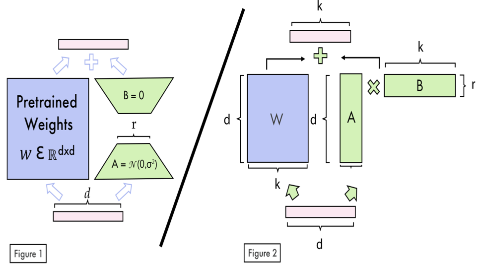
How to read this figure. It has two panels, labelled inside the image "Figure 1" and "Figure 2". Left ("Figure 1"): the big blue block is the pretrained weights W ∈ ℝd×d (a d-by-d matrix). The input (pink bar, width d) feeds both W and the green side path. The side path is A, initialised with random values from a normal distribution 𝒩(0, σ²), then B, initialised to 0; the narrow waist between them is width r. The outputs of both paths meet at the +. Because B starts at zero, B·A = 0 at the start, so the model begins exactly as the base model and only drifts as B learns. Right ("Figure 2"): the same idea as matrix shapes. W is d × k; A is a tall thin d × r; B is a short wide r × k; "A × B" has the same d × k shape as W and is added to it. (The figure multiplies in the order A×B with these shapes; the book's formula writes B·A with the transposed convention. Same idea: two thin matrices whose product is W-shaped.)
The two hyperparameters (+ dropout)
Target modules
LoRA can be put on many parts of the model. Originally it targeted the attention mechanism, specifically the query (Q) and value (V) matrices. Experiments showed clear benefits from extending it to:
- Key (K) matrices in attention layers;
- Output projection (O) layers in attention;
- Feed-forward / MLP (multi-layer perceptron) blocks between attention layers;
- Linear output layers.
But every extra adapted module adds trainable parameters and so memory.
The numbers
- With LoRA a 7B model can be fine-tuned on a single GPU with as little as 14–18 GB of VRAM, depending on configuration; full fine-tuning would usually need several high-end GPUs.
- Even targeting every module with r = 16, Llama 3 8B has only 42 million trainable LoRA parameters out of 8 billion: 0.5196%.
- Quality: comparable to, and sometimes better than, full fine-tuning.
- Multiple sets of LoRA weights can be combined for different tasks or domains, for flexible deployment and task switching without retraining. Projects specialise in multi-LoRA serving, such as LoRAX; it is also supported by Hugging Face's Text Generation Inference (TGI) and Nvidia Inference Microservices (NIM).
Try it · LoRA parameter counter (Llama 3 8B shapes)
Shapes of Llama 3 8B (beyond the book, from its public config): hidden size 4,096; K and V project to 1,024 (grouped-query attention); MLP width 14,336; 32 layers; ≈8.03B parameters. Per module, LoRA adds r × (d_in + d_out). With all seven modules at r = 16 this gives 41,943,040 ≈ 42M, and 42M ÷ (8.03B + 42M) = 0.5196%, matching the book.
Take one 4,096 × 4,096 query projection: 16,777,216 weights. With r = 16, A is 4,096 × 16 = 65,536 numbers and B is 16 × 4,096 = 65,536 numbers: 131,072 trainable, i.e. 0.78% of that matrix. With α = 32 the update is scaled by α/r = 2, so W′ = W + 2·B·A. Over 32 layers × 7 modules (with the narrower K/V and wider MLP shapes) the total is the 42M above. And because B starts at zero, step 0 of training is exactly the base model.
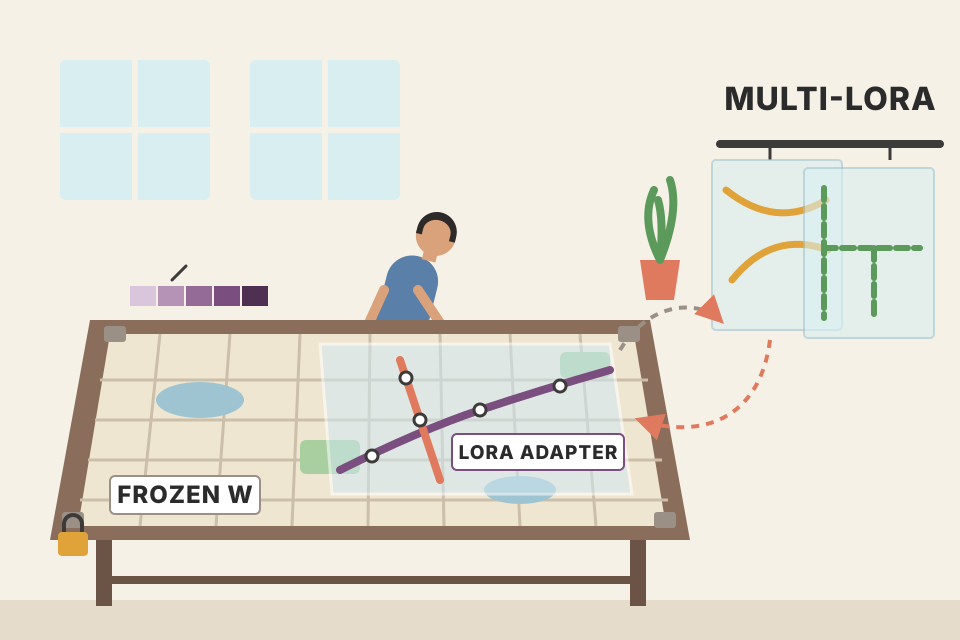
A big printed Bengaluru city map (W) that you are not allowed to redraw. LoRA is a thin transparent sheet laid on top, with just the new metro lines drawn on it (B·A). Swap the sheet for a different one (bus routes) and the same map serves a new purpose: that is multi-LoRA serving. α is how dark you draw the lines. Where it breaks: a sheet can draw anything; a rank-r update can only express changes that live in r "directions", which is why a too-small r can underfit.
The bet behind LoRA is that the change fine-tuning needs is low-rank: a few directions in weight space, even though W itself is full-rank. A d×k matrix has d·k numbers, but a rank-r matrix only needs r·(d + k). For d = k = 4,096 and r = 16 that's 128× fewer. No gradients or Adam states are kept for W, which removes 12 of the 16 bytes per frozen parameter (plate 20). After training, B·A can be merged into W (W′), so inference costs nothing extra; or kept separate to hot-swap adapters.
"Explain LoRA and its hyperparameters." → "Freeze W; learn A (d×r) and B (r×k) so the effective weight is W + (α/r)·BA. B starts at zero, so training starts from the base model. r controls capacity (8–16 common, up to 256), α scales the update (α = 2r is a common heuristic), optional dropout 0–0.1. Target all linear layers (Q, K, V, O, MLP) for best quality. Llama 3 8B at r = 16 on all modules is ~42M trainable, about 0.5%." For an LLM gateway: one base model in GPU memory plus many small adapters per customer (LoRAX, TGI, NIM).
- Plate 22 (QLoRA) · plate 32 (the book's config: r = 32, α = 32, all 7 linear modules) · Ch.10 (deploying the merged model) · Hands-On LLMs Ch.12 · AI Engineering Ch.7 (LoRA and adapter merging).
QLoRA: LoRA on a 4-bit base model, for when memory is the bottleneck
QLoRA, introduced by Dettmers et al., attacks the high compute cost of fine-tuning by combining quantization with LoRA, so developers can fine-tune on relatively small, widely available GPUs. (The book expands the name as "Quantization-aware Low-Rank Adaptation"; the paper's title is "QLoRA: Efficient Finetuning of Quantized LLMs".) Its ingredients:
The book's numbers
- Peak GPU memory reduced by up to 75% compared with LoRA.
- 7B model, initialisation: 14 GB → 9.1 GB (−35%).
- 7B model, fine-tuning: 15.6 GB (LoRA) → 9.3 GB (QLoRA) (−40%).
- Cost: about 30% slower training than LoRA.
- Model quality: only minor differences vs LoRA.
When to pick which. QLoRA when memory is the main constraint: very large models, or GPUs with little memory. LoRA when training speed matters and you have enough memory. Decide from the project's requirements, the hardware, and the balance between memory, speed and model performance.
Try it · memory and time: full fine-tuning vs LoRA vs QLoRA
Modelled estimate: full FT = 16 B/param; LoRA = 2 B/param (bf16 W) + 16 B per trainable adapter param; QLoRA = ~0.55 B/param (NF4 + quantization constants) + the same adapters; all three plus the activation slider. Time: LoRA = 1.0×, QLoRA = 1.3× (the book's "about 30% slower"). The book's measured 7B numbers (LoRA 15.6 GB vs QLoRA 9.3 GB in training) are higher than this lower bound because of buffers and CUDA overhead.
Initialisation: (14 − 9.1) ÷ 14 = 4.9 ÷ 14 = 35% less. Training: (15.6 − 9.3) ÷ 15.6 = 6.3 ÷ 15.6 = 40% less. The "up to 75%" is the best case: storing the weights alone drops from 2 bytes to about 0.5 byte per parameter (−75%); activations, adapters and buffers don't shrink, so real totals save less. If a LoRA run takes 50 minutes, the same QLoRA run would take about 65 (×1.3).
Moving house in a small car. LoRA: you carry the full-size furniture (16-bit W) plus a small box of new items (adapters). QLoRA: you flat-pack the furniture to a quarter of its volume (NF4), even fold the instruction leaflets (double quantization), and when the car overflows you put a bag on the roof carrier (paged optimizer → CPU RAM). It fits a much smaller car; unpacking at every stop takes extra time (~30% slower). Where it breaks: flat-packed furniture is identical once assembled; 4-bit weights are a close but not exact copy, which is why there are "minor differences" in quality.
In QLoRA the frozen weights sit in 4-bit, but matrix maths still runs in 16-bit: each forward and backward pass de-quantizes blocks of W on the fly, multiplies, and throws the 16-bit copy away. That extra work is the ~30% slowdown. Gradients flow through the de-quantized W into the 16-bit adapters, so learning quality stays close to LoRA. NF4's levels are spread to match the bell-shaped distribution of neural-network weights, so 16 levels are used where weights actually are.
"LoRA or QLoRA for a 70B model on one 80 GB GPU?" → "QLoRA: 70B in bf16 is ~140 GB of weights alone, so LoRA can't fit; in NF4 it's ~35–40 GB, leaving room for adapters and activations. It's about 30% slower and has slightly different quality, so if the model fits in 16-bit, plain LoRA is faster. QLoRA's tricks: NF4, double quantization of the constants, and paged optimizers for spikes."
- Plate 32 (
load_in_4bitswitches the book's code between LoRA and QLoRA) · Ch.8 (quantization formats such as GGUF, GPTQ, AWQ for inference) · AI Engineering Ch.7 · Hands-On LLMs Ch.12 (QLoRA with bitsandbytes).
The knobs that decide whether training converges
Fine-tuning has several hyperparameters (settings you choose before training, not learned). They strongly affect convergence (does the loss settle at a good value?), generalisation (does it work on unseen data?) and overall effectiveness. The book covers seven, in this order:
| # | Knob | Book's typical range | Book's run (plate 32) | Main trade-off |
|---|---|---|---|---|
| 24 | Learning rate + scheduler | 1e-6 … 1e-3, ~1e-5 common start; warmup ~5% | 3e-4, linear, 10 warmup steps | slow/stuck vs unstable |
| 25 | Batch size + gradient accumulation | 1–32 (1, 2, 4, 8, 16); accumulation 1–16 | 2 × 8 = 16 | stable gradients vs memory/time |
| 26 | Max length + packing | 512–4,096 (up to 128k+) | 2,048, packing on | context vs memory |
| 27 | Epochs | 1–10, often 2–5 | 3 | underfit vs overfit |
| 28 | Optimizer | AdamW (8-bit), AdaFactor, paged AdamW 8-bit, adamw_torch | adamw_8bit | memory vs peak quality |
| 29 | Weight decay | 0.01–0.1, 0.01 common | 0.01 | too little regularisation vs blocked learning |
| 30 | Gradient checkpointing | on/off | not set in the book's code | memory vs compute time |
Cooking biryani on a gas stove. Learning rate is the flame (too high burns, too low never cooks), the scheduler is turning the flame down as it finishes (dum), batch size is how much rice per pot, epochs are how many times you go through the whole order, weight decay is not over-salting any one ingredient, and gradient checkpointing is not keeping every intermediate bowl on the counter because the kitchen is small. Where it breaks: a cook tastes as she goes; a model only "tastes" via the loss curves (plate 33).
"Which hyperparameters matter most for LoRA SFT?" → "Learning rate first, then effective batch size and number of epochs; then max sequence length and packing for throughput, optimizer choice for memory, weight decay as light regularisation. I start from known-good defaults (e.g. 2e-4 to 3e-4 for LoRA, linear or cosine with short warmup, effective batch ~16, 1–3 epochs) and tune on eval loss."
- Plates 24–30 · plate 32 (where every knob is set in code) · Hands-On LLMs Ch.12 (TrainingArguments).
The most important knob, and how it changes over training
The learning rate is the most important hyperparameter: it controls how much the parameters change at each update. Typical values run from about 1e-6 to 1e-3; a common starting point for transformers is around 1e-5.
- Too low: training is slow and may get stuck in poor solutions.
- Too high: training becomes unstable or diverges, giving poor performance.
- It is often worth trying several values to find the best for your task and model.
The learning rate scheduler changes the learning rate during training. Usually it starts higher for fast early progress, then decreases later for finer, more precise updates. The two most common:
- Linear: decreases steadily over time.
- Cosine: follows a cosine curve, decreasing slowly at first, then faster towards the end.
Example from the book: start at 3e-4 and decay to 1e-7 over training. A common recipe adds a warmup period (e.g. 5% of total steps) in which the rate rises from 0 to the initial value, then a decay over the remaining 95%. Warmup stabilises early training; decay allows refined updates as the model converges. In general, linear and cosine give the same level of performance.
Try it · plot the schedule
Curves are computed from the formulas (linear: straight line to the floor; cosine: half a cosine wave). The 1e-7 floor follows the book's example. 420 steps ≈ the length of the book's own run (Figure 5.11).
Warmup = 50 steps: at step 25 the LR is 1.5e-4, at step 50 it reaches 3e-4. Then 950 decay steps. Linear at step 525 (halfway through decay): ≈ (3e-4 + 1e-7)/2 ≈ 1.5e-4. Cosine at the same step: also ≈ 1.5e-4 (the midpoint of a cosine is the average), but at step 288 (a quarter of decay) cosine is still ≈ 2.56e-4 while linear has fallen to 2.25e-4. Cosine holds the rate high longer, then drops faster.
Parking a car in a tight spot. Warmup: you don't floor the accelerator from a standstill. Mid-way: decent speed to get close. Decay: you creep the last metre. Learning rate too high = you hit the wall; too low = you never reach the spot before the mall closes. Where it breaks: a driver sees the wall; the optimizer only sees the local slope.
Each update moves weights by roughly LR × (gradient direction adjusted by Adam). Early on, Adam's running averages are poorly estimated and gradients are large, so big steps can throw the model far off (warmup avoids this). Late in training the model is near a good region, where big steps would overshoot it; a decaying LR lets it settle. LoRA usually tolerates higher LRs (like the book's 3e-4) than full fine-tuning (closer to 1e-5), because only small adapters move and B starts at zero.
"Your loss spikes and diverges in the first 50 steps." → "LR too high, or no warmup. Add a warmup of ~5% of steps, lower the peak LR (e.g. 3e-4 → 1e-4 for LoRA, or 1e-5-ish for full fine-tuning), and check gradient norms; add gradient clipping. Linear vs cosine rarely matters; the peak value and warmup do."
- Plate 33: the
learning_ratepanel in Figure 5.11 shows the real schedule (warmup → 3e-4 → linear to 0) · plate 28 (AdamW adapts per-parameter steps on top of this LR).
Batch size, and gradient accumulation to fake a bigger one
The batch size is the number of samples processed before the weights are updated. For LLM fine-tuning it is typically 1 to 32, with common values 1, 2, 4, 8 or 16. Larger batches give more stable gradient estimates (closer to the "true" gradient of the whole dataset) and can speed training. But they need more memory: e.g. batch 16 may work on a high-end 24 GB GPU, while an 8 GB GPU might only manage 2 or 4.
Gradient accumulation works around this: run several forward and backward passes on small mini-batches, add up their gradients, and only then apply one update. Useful with big models or small GPUs. Book's example: you want an effective batch of 32 but your GPU fits 8 → set accumulation steps to 4: four mini-batches of 8, then one update as if you'd processed 32 at once.
Accumulation steps typically range from 1 (none) to 8 or 16. Trade-off: more steps allow a larger effective batch but make each update take longer. The formula:
Example: 2 GPUs, each with a batch of 4, and 4 accumulation steps → 4 × 2 × 4 = 32 samples per update.
Try it · effective batch calculator
Default = the book's run (2 × 1 × 8 = 16). 12,700 rows ≈ 95% of the book's ~13,335 samples (modelled). Steps ignore packing, which in reality merges short samples and lowers the step count.
A teacher grading a class test to decide how to change her teaching. Reading one answer sheet and changing the lesson plan each time is jumpy (batch 1). Reading 32 and then adjusting is steadier, but she can't hold 32 sheets on her small desk. So she reads 8, writes a tally, reads 8 more, adds to the tally… after 4 rounds she adjusts once (gradient accumulation). Where it breaks: some layers (like batch normalisation) really do need the samples together, but LLMs use layer normalisation, so accumulation is nearly equivalent.
The gradient of the average loss over 32 samples equals the average of the gradients of 4 groups of 8. So summing (and scaling) mini-batch gradients gives the same update as one big batch, while activations for only 8 samples live in memory at a time. You pay with time: 4 sequential passes per update instead of one parallel one.
"Out of memory at batch size 16, what do you do?" → "Drop the per-device batch to 2 and set gradient accumulation to 8: same effective batch of 16, a fraction of the activation memory. If still OOM, enable gradient checkpointing, shorten max length, or use QLoRA. Effective batch = per-device × GPUs × accumulation."
- Plate 26 (tokens per batch = batch × max length) · plate 20 (gradient accumulation as a memory-saving trick) · plate 32 (2 × 8 = 16).
How long a sample may be, and how to stop wasting space on padding
The maximum sequence length is the longest input the model will process. Typically 512 to 4,096 tokens, but up to 128,000 or more depending on the task and GPU memory. 2,048 is common for many generation tasks; RAG applications might use 8,192 or more.
- Longer sequences are truncated: extra tokens are removed, either at the beginning (left truncation) or the end (right truncation). With max 1,024, a 1,500-token input loses 476 tokens.
- It directly drives batch size and memory: batch 12 × max 1,024 = 12,288 tokens; the same batch at max 512 holds 6,144.
- Balance it with your GPU and your data.
Packing makes full use of each batch. Instead of one sample per slot, it combines several short samples into one sequence. If max length is 1,024 but many samples are 200–300 tokens, packing could fit 3–4 samples per slot. A big efficiency win for datasets of short sequences. But it needs care: attention must not cross between packed samples. This is done with attention masks that stop a token from attending to tokens of a different sample in the same packed sequence.
Try it · padding vs packing
Sample lengths are modelled (in tokens). Grey = padding (wasted compute). The mask shows which earlier tokens each token may attend to in one packed row: causal (lower-left triangle) and only within its own sample.
Max length 1,024, input 1,500 tokens → 1,500 − 1,024 = 476 tokens cut. With right truncation the end of the answer (often including the end-of-turn token) is lost, so the model never sees how that answer finishes; with left truncation the start of the instruction is lost. Tokens per batch: 12 × 1,024 = 12,288 vs 12 × 512 = 6,144: halving max length halves the activation memory per batch.
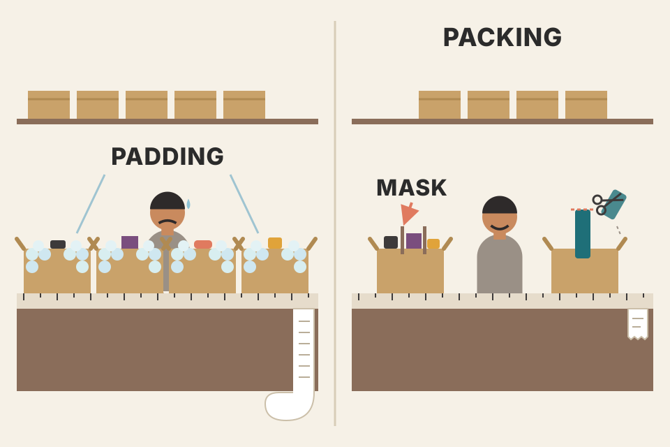
Sending parcels in fixed-size courier boxes. Without packing, one small item per box and the rest is bubble wrap (padding): you pay for air. Packing puts three small items in one box, with cardboard dividers (attention masks) so the items don't mix. Max length is the box size: an item too big gets trimmed to fit (truncation). Where it breaks: cardboard dividers are free; masking needs the right attention kernel support, and a sloppy implementation lets samples "see" each other.
GPUs process a batch as a rectangle: batch × max length. Every padding token costs the same compute as a real one. Packing converts a ragged set of lengths into nearly full rows, so throughput can rise several-fold on short-sample datasets. Without a per-sample mask, the model would learn spurious dependencies between unrelated samples; with the block-diagonal mask, each sample is trained exactly as if it were alone.
"Training is slow and your samples are ~250 tokens with max length 2,048." → "~88% of every row is padding. Turn on packing with proper per-sample attention masks, or lower max length to fit the data distribution. Check the truncation side and how many samples exceed the limit, since truncated answers can lose their EOS token."
How many times to read the whole dataset
An epoch is one complete pass through the whole training set. For LLM fine-tuning the typical range is 1 to 10, and many successful runs use 2 to 5. The best number depends on task complexity, dataset size and model architecture.
- More epochs let the model refine what it learned and may improve performance.
- The trade-off: too few → underfitting, too many → overfitting.
- Book's example: a large model on a small dataset might need only 1–3 epochs; a smaller model on a larger dataset could benefit from 5–10.
- Monitor validation performance during training and use early stopping when it plateaus or gets worse. This picks the number of epochs dynamically and prevents overfitting.
Try it · train vs validation loss over epochs, with early stopping
Toy curves (modelled): train loss keeps falling; validation loss falls, then rises once the model starts memorising. Where it turns depends on model size vs data size, following the book's 1–3 vs 5–10 example.
Revising for a board exam with one guide book. One read: you miss things (underfit). Three reads: you understand it. Ten reads: you've memorised the guide's exact sentences and now stumble when the real exam words a question differently (overfit). A mock test after each read tells you when to stop (validation + early stopping). Where it breaks: students forget between reads; models don't, which is why they overfit faster than students.
Each epoch shows the same examples again. At first the model learns patterns shared by many examples, which also help on unseen data. Later, the cheapest way to lower training loss is to memorise individual examples, which doesn't help validation. A big model has more capacity to memorise, so with little data it hits that point sooner. In Figure 5.11 you can see each epoch as a separate step down in the training loss (plate 33).
"How many epochs for SFT?" → "Usually 1–3 for a large model on a few thousand samples, more for small models on big datasets. I log eval loss each epoch (or every N steps), keep the best checkpoint, and stop early when eval loss stops improving. A widening train/eval gap is the overfitting signal."
- Plate 33 (the book's three epochs and the slight eval-loss rise at step 340) · plate 29 (weight decay also fights overfitting) · Ch.7 (real evaluation beyond loss).
AdamW (8-bit), AdaFactor, paged optimizers
Optimizers change the model's parameters to minimise the loss. For LLM fine-tuning the book's recommendations:
| Optimizer | What the book says | When |
|---|---|---|
| AdamW (Adaptive Moment Estimation with Weight Decay) | Highly recommended. Combines adaptive per-parameter learning rates with weight-decay regularisation, often giving better stability and performance. | default |
| AdamW 8-bit | Performs comparably to 32-bit while using less GPU memory. It does not make training faster. | the book's choice (adamw_8bit) |
| AdaFactor | Designed for memory efficiency; works well without explicit learning-rate tuning. May not always match AdamW. | severe memory limits |
| Paged AdamW 8-bit | Paged versions offload to CPU RAM to cut GPU memory further. | extremely large models / little GPU memory |
| adamw_torch (non-quantized) | May be the best choice if memory allows and maximum performance is the priority. | plenty of memory |
Try it · optimizer state memory for the trained parameters
Bytes per trained parameter for optimizer state (beyond the book, standard approximations): AdamW 32-bit 8 B (two fp32 moments, as in plate 20), AdamW 8-bit ≈ 2 B, AdaFactor ≈ a few bytes per row/column instead of per parameter (shown as ≈0.1 B), paged AdamW 8-bit ≈ 2 B but can spill to CPU RAM.
A delivery rider choosing routes. Plain gradient descent just follows today's traffic. Adam keeps two notebooks per road: average speed lately (momentum) and how bumpy it has been (variance), and drives faster on smooth roads, carefully on bumpy ones. 8-bit Adam writes the notebooks in shorthand (less paper, same decisions). AdaFactor keeps one summary per area instead of per road. Paged = leave notebooks at home and phone for them when needed. Where it breaks: phoning home (CPU offload) is slow if you do it all the time.
Adam's per-parameter step is roughly LR × momentum / √variance: parameters with steady gradients move confidently, noisy ones cautiously. AdamW "decouples" weight decay: it shrinks weights directly instead of mixing the penalty into the gradient (plate 29). 8-bit versions store the two moments with block-wise quantization, which is accurate enough because the optimizer only needs their rough size. With LoRA the optimizer states are already small (they cover only adapters), so the choice matters most for full fine-tuning.
"Which optimizer for fine-tuning, and why 8-bit?" → "AdamW. The 8-bit version keeps quality while cutting optimizer memory about 4×, but doesn't speed training. If memory is extremely tight, paged AdamW 8-bit offloads to CPU; AdaFactor is another low-memory option needing little LR tuning. With lots of memory and maximum quality as the goal, plain adamw_torch."
- Plate 20 (optimizer states = 8 of the 16 bytes) · plate 22 (QLoRA's paged optimizers) · plate 29 (weight decay) · plate 32 (
optim="adamw_8bit").
A small penalty on big weights, for better generalisation
Weight decay adds a penalty for large weights to the loss function. This pushes the model to learn simpler, more generalisable features and not lean too heavily on any single input feature, which can improve performance on unseen data.
- Typical values: 0.01 to 0.1, with 0.01 a common starting point (e.g. with AdamW, set weight decay to 0.01).
- Too high: learning is impeded; the model struggles to capture important patterns.
- Too low: not enough regularisation.
- The best value depends on model architecture and dataset, so experiment.
Try it · what weight decay does to one weight
Toy model (modelled): each step the gradient pulls the weight towards the value the data wants (2.0), while decoupled weight decay shrinks it by LR × decay × w, as in AdamW. LR is set large (0.1) so the effect shows in 200 steps.
A cricket selector who doesn't let the team depend on one star batsman: every match, each player's "importance" is trimmed a little unless he keeps earning it. The team learns to win through many contributors, so it copes when the star is out. Too much trimming, and nobody gets enough responsibility to play well. Where it breaks: a selector judges people; decay trims every weight blindly by the same fraction.
Classic L2 regularisation adds λ·‖w‖² to the loss. In AdamW the decay is "decoupled": after the Adam step, each weight is multiplied by (1 − LR·λ). Weights the data keeps pushing up stay large; weights only kept alive by noise shrink towards zero. Fewer large weights means a smoother function that is less likely to memorise individual samples.
"What does weight decay do and what value would you use?" → "It penalises large weights so the model prefers simpler solutions and generalises better. With AdamW it's applied decoupled from the gradient. 0.01 is a common start, 0.1 at the high end; too high underfits. The book's run uses 0.01."
- Plate 28 (AdamW = Adam + weight decay) · plate 27 (overfitting) · plate 21 (LoRA dropout is another regulariser).
Store fewer activations, recompute the rest
Gradient checkpointing (also called activation checkpointing) cuts training memory by storing only a subset of the intermediate activations from the forward pass. Normally all activations are kept in memory so gradients can be computed in the backward pass. For very deep networks like LLMs, that quickly becomes impractical, especially on GPUs with limited memory.
Checkpointing saves activations only at selected layers. For the others, activations are recomputed during the backward pass when needed for the gradient. The trade-off: much less memory, but more compute time because some activations are calculated twice.
The book adds that other parameters and techniques exist, but they play a minor role compared to those above. The next section (plates 31–33) shows how to choose and set these knobs on a concrete example.
Toy model (modelled). Rule of thumb beyond the book: checkpointing every √L layers stores about √L activations instead of L, for roughly one extra forward pass (~30% more compute).
Long-division homework on a small slate. Normally you keep every intermediate line so you can check your work backwards. With a tiny slate you keep only every second line; when checking, you redo the missing line from the one before it. Less slate needed, more time spent. Where it breaks: redoing a line of arithmetic is cheap; recomputing a transformer layer costs a full layer's forward pass.
Activation memory grows with layers × batch × sequence length × hidden size, so at long contexts it can exceed the weights. Backprop needs each layer's input to compute its gradient. Keeping only checkpoints and re-running the forward pass from the nearest checkpoint during backprop keeps peak memory to the checkpoints plus one segment's activations.
"Gradient checkpointing: what's the trade?" → "Memory for compute. You keep activations only at some layers and recompute the rest in the backward pass, which typically adds around a third more compute but lets you fit much longer sequences or bigger batches. I turn it on when activations, not weights, are what blow the memory, e.g. long-context fine-tuning."
- Plate 20 (activations in the memory formula; "activation checkpointing" as a saving) · plate 26 (longer sequences = more activations) · plate 32 (Unsloth's memory optimisations).
Picking the base model (Llama 3.1 8B) and the library (Unsloth)
Now the book fine-tunes an open-source model on the LLM Twin dataset, with code that implements LoRA and QLoRA for efficiency; pick whichever matches your hardware.
Choosing the base model: three criteria
The book picks Llama 3.1 8B (Meta, open-weight). Its custom "Llama 3.1 Community License Agreement" is permissive and allows commercial use. At 8B parameters it fits on most GPUs while performing well against competitors, which you can check on the Open LLM Leaderboard and in the benchmarks on its model card.
Choosing the library
| Library | Made by | What the book says | GPUs |
|---|---|---|---|
| TRL | Hugging Face | Trains LLMs with SFT and preference alignment; popular, reliable, usually the most up to date with new algorithms. | single and multi (FSDP, DeepSpeed) |
| Axolotl | Wing Lian | Fine-tuning from reusable YAML config files; built on TRL with extras, e.g. automatically combining datasets stored in different formats. | single and multi (FSDP, DeepSpeed) |
| Unsloth | Daniel and Michael Han | Custom kernels: 2–5× faster training, up to 80% less memory. Built on TRL; utilities like automatic conversion to the GGUF quantization format. | single-GPU only (at the time of writing) |
(FSDP = Fully Sharded Data Parallel, PyTorch's way to shard weights, gradients and optimizer states across GPUs; DeepSpeed = Microsoft's library for the same kind of distributed training.)
The book uses Unsloth for maximum efficiency. The code is part of the LLMOps pipeline but also runs as a standalone script, in environments such as SageMaker, cloud GPUs (Lambda Labs, RunPod), Google Colab and others. It was tested on A40, A100 and L4 GPUs. For installation, the book recommends following the instructions in the book's GitHub repo (PacktPublishing/LLM-Engineering) or Unsloth's repo, because install steps are updated often to resolve dependency conflicts.
Try it · does this setup fit the book's criteria?
Buying a used car to convert into a food truck. License: is the RC transferable for commercial use? Budget: a small van is cheaper to buy, fuel and park than a bus. Performance: test-drive it on the roads you'll actually use. Then pick a workshop: TRL is the authorised service centre, Axolotl is a workshop that works from a printed job card (YAML), Unsloth is the fast specialist garage with one bay (single GPU). Where it breaks: a van is either commercial-licensed or not; LLM licenses can have odd thresholds, so read them.
Unsloth's speed comes from hand-written GPU kernels (fused operations and manual back-propagation for attention and LoRA layers) that avoid writing intermediate tensors to memory. Because it wraps TRL, the trainer API is the same SFTTrainer, so moving to multi-GPU TRL or Axolotl later is mostly a configuration change.
"How do you choose a base model and stack to fine-tune?" → "License first (commercial use?), then budget (sub-10B is far cheaper to train and serve), then benchmarks close to my task. For tooling: TRL for flexibility and multi-GPU, Axolotl for config-driven runs, Unsloth for the fastest single-GPU LoRA/QLoRA with GGUF export."
The Unsloth run, step by step: Llama 3.1 8B → TwinLlama-3.1-8B
The book's script has twelve numbered steps. Below, each step is explained, with short snippets that use the real library calls but our own variable names and trimmed arguments.
Steps 1–2 · accounts and keys
You need a Hugging Face account to download a gated model (Llama requires accepting Meta's terms) and, optionally, to upload the fine-tuned one. Create an access token (Settings → Access Tokens → Create new token) and put it in the .env file as HF_TOKEN. Put your Comet ML key there too, as COMET_API_KEY, for experiment tracking.
Step 3 · imports
os, torch; SFTTrainer from TRL; load_dataset and concatenate_datasets from datasets; TrainingArguments and TextStreamer from transformers; FastLanguageModel and is_bfloat16_supported from unsloth. (The printed listing accidentally glues two import lines together; it is two separate imports.)
Step 4 · load the base model
FastLanguageModel.from_pretrained() returns the model and its tokenizer. Besides the model name, you set the max sequence length (2,048). The load_in_4bit flag is the LoRA/QLoRA switch: True loads quantized weights (QLoRA). The book uses LoRA (False) for faster training and higher quality; switch to QLoRA if you lack VRAM.
CTX = 2048
llm, tok = FastLanguageModel.from_pretrained(
model_name="meta-llama/Meta-Llama-3.1-8B", # base model, not Instruct
max_seq_length=CTX,
load_in_4bit=False, # True -> QLoRA (NF4 base)
)Step 5 · the LoRA configuration
Rank 32: big enough to imitate the writing style and absorb the knowledge in the samples; raise to 64 or 128 if results disappoint. Alpha 32 (so α/r = 1, not the 2r heuristic of plate 21), no dropout and no bias to speed up training. Target every linear layer to maximise quality: the four attention projections and the three MLP projections.
llm = FastLanguageModel.get_peft_model(
llm,
r=32, lora_alpha=32, lora_dropout=0,
target_modules=["q_proj", "k_proj", "v_proj", "o_proj", # attention
"gate_proj", "up_proj", "down_proj"], # MLP
)Step 6 · data: upsample with FineTome
The llmtwin dataset has only about 3,000 samples, which is a problem: the model might not learn the chat template properly (plate 4). So the book adds a high-quality general-purpose set, FineTome: a version of arcee-ai/The-Tome filtered with the fineweb-edu-classifier (plate 9). Only 10,000 of its 100,000 samples are taken from the train split, then the two are concatenated.
twin = load_dataset("mlabonne/llmtwin")
tome = load_dataset("mlabonne/FineTome-Alpaca-100k", split="train[:10000]")
mixed = concatenate_datasets([twin, tome]) # (as printed; with a DatasetDict
# you would pick twin["train"])Step 7 · format with the Alpaca template + EOS
The book uses the Alpaca chat template for convenience: it needs no extra special tokens, so it is less error-prone (it may perform slightly worse than ChatML). Each sample becomes a fixed header line ("Below is an instruction that describes a task…"), then ### Instruction: + the instruction, then ### Response: + the answer. The EOS (end of sentence) token is added manually at the end of every sample so the model learns to emit it; without it, the model keeps generating and never stops. The mapping function itself isn't printed in the book; here is a version of the same idea:
TEMPLATE = ("Below is an instruction that describes a task. "
"Write a response that appropriately completes the request.\n\n"
"### Instruction:\n{}\n\n### Response:\n{}")
END = tok.eos_token # e.g. "<|end_of_text|>" for Llama 3.1
def to_text(batch): # our own helper
return {"text": [TEMPLATE.format(q, a) + END
for q, a in zip(batch["instruction"], batch["output"])]}
mixed = mixed.map(to_text, batched=True, remove_columns=mixed.column_names)Try it · what the EOS token does at generation time
Simulated output (modelled), not a real model run.
Step 8 · train/test split
95% train, 5% test (test_size=0.05) for validation during training. (Different from the 90/10 split used when the dataset was created in plate 14.)
Step 9 · the trainer and its hyperparameters
SFTTrainer holds the model, tokenizer, datasets and all training settings. Following plates 23–30:
trainer = SFTTrainer(
model=llm, tokenizer=tok,
train_dataset=split["train"], eval_dataset=split["test"],
dataset_text_field="text", max_seq_length=CTX,
dataset_num_proc=2, packing=True, # plate 26
args=TrainingArguments(
learning_rate=3e-4, lr_scheduler_type="linear", # plate 24
warmup_steps=10,
per_device_train_batch_size=2,
gradient_accumulation_steps=8, # 2 x 8 = 16, plate 25
num_train_epochs=3, # plate 27
optim="adamw_8bit", weight_decay=0.01, # plates 28-29
bf16=is_bfloat16_supported(), fp16=not is_bfloat16_supported(),
logging_steps=1, report_to="comet_ml", # plate 33
output_dir="output", seed=0,
),
)
trainer.train()| Setting | Value | Why (the book's reasoning) |
|---|---|---|
| learning rate / scheduler | 3e-4, linear, 10 warmup steps | plate 24's recommendations |
| max length / packing | 2,048 / on | common for generation; packing fills rows with short samples |
| batch | 2 per device × 8 accumulation = 16 | fits memory, stable gradients |
| epochs | 3 | three passes; visible as three phases in the loss (plate 33) |
| optimizer / weight decay | adamw_8bit / 0.01 | less memory, same quality; common starting decay |
| precision | BF16 if supported, else FP16 (for activations) | chosen automatically from the GPU |
| logging | every step, to Comet ML | experiment tracking |
Training on the combined dataset can take a few hours; on an A100 it took 50 minutes.
Steps 10–11 · a quick smoke test
Not a real evaluation (that's Chapter 7), just a check for obvious tokenizer or chat-template errors. FastLanguageModel.for_inference() switches Unsloth to fast inference. The prompt is formatted with the Alpaca template and an empty answer, so the string ends with the ### Response: header: this forces the model to answer the instruction instead of continuing it. A TextStreamer prints tokens as they are generated.
FastLanguageModel.for_inference(llm)
prompt = TEMPLATE.format("Write a paragraph to introduce supervised fine-tuning.", "")
ids = tok([prompt], return_tensors="pt").to("cuda")
llm.generate(**ids, streamer=TextStreamer(tok), max_new_tokens=256, use_cache=True)The model's reply (summarised): SFT improves a language model by training it on a curated set of instructions and answers, to align responses with human expectations, making it more accurate and relevant for chatbots and virtual assistants. The book judges it correct and properly formatted with the Alpaca template.
Step 12 · save and publish
Save locally and/or push to the Hugging Face Hub as mlabonne/TwinLlama-3.1-8B. save_method="merged_16bit" merges the LoRA adapters into the base weights (W′ = W + BA, plate 21) and saves a normal 16-bit model.
llm.save_pretrained_merged("model", tok, save_method="merged_16bit")
llm.push_to_hub_merged("mlabonne/TwinLlama-3.1-8B", tok, save_method="merged_16bit")Training a new RJ (radio jockey) to sound like a famous host. You only have 3,000 clips of the host (llmtwin), not enough for the trainee to learn the station's show format, so you add 10,000 clips of good general radio (FineTome). Every clip ends with the station jingle (EOS) so the trainee learns when a segment is over. You keep 5% of clips aside to test him. Where it breaks: the trainee might also pick up the general clips' voice, diluting the host's style; that is the price of upsampling.
Each training row is the full Alpaca string; with packing, several are joined into 2,048-token rows. The loss trains the 84M-ish LoRA parameters (r = 32 doubles the 42M of r = 16) while the 8B base weights stay frozen in bf16, roughly 16 GB, which is why a single A100 or A40 is enough. Merging at the end means inference needs no LoRA support at all.
"Walk me through a LoRA SFT run you'd set up." → "Base Llama 3.1 8B in bf16 via Unsloth; LoRA r = 32, α = 32 on all linear layers; data = my 3k domain samples upsampled with 10k high-quality general samples so the template is learned; Alpaca template with an explicit EOS; 95/5 split; LR 3e-4 linear with warmup, effective batch 16, 3 epochs, adamw_8bit, weight decay 0.01, packing at 2,048; log to Comet; smoke-test generation; merge to 16-bit and push to the Hub."
Reading the training curves in Comet ML: loss, eval loss, learning rate, grad norm
During training, Comet ML shows the training loss, validation loss and many other metrics. Check that they behave as expected. Figure 5.11 is the run from plate 32.
![Four Comet ML charts. loss: starts near 1.3, drops quickly below 0.9, then noisy plateaus around 0.8, 0.7 and 0.55 with step-downs near steps 140 and 285, ending near 0.53 at about step 425. eval_loss: 0.82 at step 85, 0.778 at 170, 0.749 at 255, then up to 0.759 at 340. learning_rate: rises from about 30 micro to 300 micro within the first 10 steps, then falls in a straight line to 0 at about step 425. grad_norm: a spike near 0.7 at the start, quickly falls to about 0.12, then slowly rises to about 0.18](figs/fig-5-11.png)
How to read this figure. Four panels, x-axis = training step (about 425 in total). loss (top left): starts around 1.3, falls fast in the first ~20 steps, then is noisy but trends down in three flat "terraces": ~0.8 until step ~140, ~0.7 until ~285, ~0.55 to the end. Each drop is a new epoch: the model sees the same samples again and finds them easier. eval_loss (top right): measured only 4 times (~steps 85, 170, 255, 340): 0.82 → 0.778 → 0.749 → 0.759. The last point ticks up. learning_rate (bottom left): the real schedule: a 10-step warmup to 300μ (3e-4), then a straight linear decay to 0. (This differs from the prose example in plate 24, which used 5% warmup and a 1e-7 floor.) grad_norm (bottom right): a spike around 0.7 at the very start, a drop to about 0.12, then a slow drift up to about 0.18, with small bumps at the epoch boundaries.
The book says three of these four metrics are especially important to monitor:
It is often worth trying several learning rates and keeping the model with the lowest loss. But loss is only a proxy for real evaluation, which is the next chapter's topic.
Try it · diagnose a training run
Curves are simulated (modelled) to show each pattern the book describes; the "healthy" one imitates the shapes in Figure 5.11 (three epochs, eval measured 4 times).
0.82 → 0.778: −0.042. 0.778 → 0.749: −0.029. 0.749 → 0.759: +0.010 (≈ +1.3%). Meanwhile training loss at step 340 is ~0.55, so the train/eval gap has grown from about zero at step 85 (eval 0.82 vs train ~0.85) to about 0.21 at step 340 (0.759 vs ~0.55). Small rise, growing gap, during the third epoch: the early sign of overfitting the book mentions. A checkpoint around step 255 would have the lowest eval loss; with early stopping (plate 27) you might stop after two epochs.
A car dashboard on a long drive. Training loss is the fuel-efficiency readout: it should improve and settle. Validation loss is the GPS's real arrival estimate: if efficiency looks great but arrival time gets worse, you're optimising the wrong thing (overfitting). Gradient norm is the RPM needle: a calm needle is good; constant redlining means trouble, and a rev limiter (gradient clipping) stops engine damage. Where it breaks: a dashboard measures the actual trip; loss is only a proxy for what users will think of the answers (Chapter 7).
The early grad-norm spike is the model meeting a new data format (the Alpaca template) while the LR is still warming up; once the template is learned, gradients shrink. The terraces in training loss come from repetition: in epoch 2 every sample has been seen once, so its loss is lower. The slow rise in grad norm later, together with the eval-loss uptick, fits the model starting to fit individual samples. Gradient clipping rescales the whole gradient vector whenever its norm exceeds a threshold (commonly 1.0), keeping update size bounded.
"What do you monitor during fine-tuning and what are the red flags?" → "Train loss (should drop fast then plateau; spikes or rises mean data, tokenizer or LR problems), eval loss (should track train with a small gap; rising eval with falling train is overfitting, both flat-high is underfitting) and gradient norm (spikes mean instability; clip it). Plus the LR schedule to confirm warmup and decay. Then sweep a few learning rates and pick by eval loss, knowing loss is only a proxy for real evaluation."
Summary and key terms
The book's own wrap-up, in plain words:
- Instruction data pipeline: how to build a high-quality instruction dataset, from curation to augmentation. Every stage can be optimised, especially quality assessment, data generation and enhancement. The pipeline is flexible: pick the stages and techniques that fit your use case.
- Applied to real data: the Chapter 3 articles were turned into instruction–answer pairs by an LLM (backtranslation + rephrasing, GPT-4o mini, JSON mode → 3,335 pairs).
- SFT techniques: SFT's advantages and limits (prompt first; new knowledge is hard; forgetting), storing and parsing instruction data (Alpaca, ShareGPT, OpenAI) with chat templates, and the three main methods: full fine-tuning, LoRA, QLoRA, compared on memory, training efficiency and output quality.
- Practice: fine-tuning Llama 3.1 8B on the custom dataset with Unsloth (LoRA r = 32, FineTome upsampling, Alpaca + EOS, 3 epochs) to produce TwinLlama-3.1-8B, and monitoring it in Comet ML.
Next: Chapter 6 uses preference alignment to make a new version of TwinLlama-3.1-8B, with a new dataset of chosen and rejected answers that calibrates what kind of answers we want, plus the many applications that benefit from it and how to implement it.
| Term | Meaning (plain words) |
|---|---|
| SFT (supervised fine-tuning) | Further training a pre-trained model on instruction → answer pairs so it follows instructions. |
| Base vs instruct model | Base: only continues text, no chat template. Instruct/chat: already SFT'd with a template. |
| Instruction dataset | List of samples with instruction (+ optional input, system) and expected output. |
| Accuracy · diversity · complexity | The book's three dimensions of data quality. |
| Rule-based filtering | Explicit rules (length, keywords, format) that drop bad samples. |
| Exact / fuzzy / semantic dedup | Hash matching / MinHash + Jaccard on shingles / embeddings + cosine or clustering. |
| MinHash | Short signature of minimum hash values; matching fraction estimates Jaccard similarity. |
| Decontamination | Removing training samples that match or resemble evaluation data. |
| LLM-as-a-judge / jury | An LLM (or several) grading samples; biases: position, length, self-preference. |
| Reward model | LLM with a scoring head that rates instruction + answer (e.g. ArmoRM). |
| Topic clustering | Embed → reduce (UMAP) → cluster (DBSCAN) → label to see what the data covers. |
| Synthetic data / taxonomy | LLM-generated samples, seeded by a structured list of prompts. |
| Evol-Instruct (in-depth / in-breadth) | Rewriting instructions to be harder / writing new long-tail ones. |
| UltraFeedback | Many models answer; GPT-4 critiques and scores the answers. |
| Backtranslation | Generating the instruction from a known answer. |
| JSON mode / structured generation | Forcing model output to follow a format so it always parses. |
| Alpaca / ShareGPT / OpenAI format | Flat single-turn fields / list of {from, value} / list of {role, content}. |
| Continual pre-training | Fine-tuning on raw text, same objective as pre-training. |
| Chat template | Exact string layout with special tokens (ChatML, Llama 3, Phi-3, Gemma, Alpaca); written in Jinja. |
| add_generation_prompt | Appends the assistant header at inference so the model answers next. |
| EOS token | End-of-sequence token; must be in training samples or the model never stops. |
| Full fine-tuning | Updating every parameter; ~16 bytes/param with fp32 + Adam. |
| Catastrophic forgetting | Losing earlier knowledge because training overwrote the weights. |
| PEFT | Parameter-efficient fine-tuning: train a small number of extra/selected parameters. |
| LoRA, rank r, alpha α | W′ = W + BA with W frozen; r = inner size; update scaled by α/r. |
| Target modules | Which linear layers get adapters (q, k, v, o, gate, up, down). |
| QLoRA, NF4 | LoRA on a 4-bit NormalFloat-quantized base model. |
| Double quantization · paged optimizer | Quantizing the quantization constants · paging optimizer state via unified memory. |
| Learning rate · scheduler · warmup | Step size · how it changes (linear, cosine) · ramp-up from 0 at the start. |
| Gradient accumulation · effective batch | Summing gradients over mini-batches · per-GPU batch × GPUs × accumulation steps. |
| Max length · truncation · packing | Longest sequence · cutting extra tokens (left/right) · several samples per row with attention masks. |
| Epoch · early stopping | One full pass over the data · stopping when validation stops improving. |
| AdamW (8-bit) · AdaFactor | Adam with decoupled weight decay (states in 8-bit) · memory-light optimizer needing little LR tuning. |
| Weight decay | Penalty on large weights for better generalisation (0.01–0.1). |
| Gradient checkpointing | Store some activations, recompute the rest in backprop: memory ↔ compute. |
| Gradient norm · clipping | Size of the gradient vector · capping it to limit update size. |
| Merged 16-bit | LoRA adapters folded into the base weights and saved as a normal model. |
Where you meet this in real systems
| Tool / model / company | Role in the chapter |
|---|---|
| Hugging Face Hub | Hosts instruction datasets (Fig 5.2), the llmtwin dataset, FineTome and TwinLlama-3.1-8B; dataset viewer (Fig 5.7). |
| Open-Orca/SlimOrca, OpenOrca, OpenHermes, Dolphin, Alpaca | Example instruction datasets (Table 5.1, data sizes, seed instructions). |
| LIMA · Yi (01.AI) · Llama 3 (Meta) | Data-quantity examples: 1k samples for 70B · under 10k · 10M across post-training. |
| MD5 / SHA-256 · MinHash · Word2Vec, GloVe, FastText, BERT, sentence transformers, cross-encoders · K-means, DBSCAN | Exact, fuzzy and semantic deduplication tools. |
| GPT-4o, GPT-4, GPT-4o mini (OpenAI) | Judges and generators; GPT-4o mini creates the llmtwin pairs in JSON mode for under $0.50. |
| RLHFlow/ArmoRM-Llama3-8B · RewardBench (Allen AI) | Multi-objective reward model (Fig 5.3) · reward-model leaderboard. |
| HuggingFaceFW/fineweb-edu-classifier · Snowflake arctic-embed-m | Small quality classifier (20 epochs, 450k Llama 3 70B labels) and its embedding base. |
| Argilla | Collaborative annotation and exploration UI (Fig 5.4). |
| NLTK, spaCy, Matplotlib, Seaborn | Statistical analysis and plots of datasets. |
| HF text-clustering · Nomic Atlas · BunkaTopics · Lilac | Topic clustering and visual exploration (Fig 5.5). |
| Outlines | Structured generation for synthetic data. |
| Evol-Instruct · AutoEvol · UltraFeedback | Data augmentation methods (Table 5.4 prompt). |
| openai 1.37.1 · datasets 2.20.0 · tqdm 4.66.4 · pydantic | Libraries of the dataset-generation script. |
| Jinja templates in Transformers | Reliable chat templates; add_generation_prompt. |
| Llama 3.1 8B (Meta) | Base model; Llama 3.1 Community License allows commercial use; checked on the Open LLM Leaderboard. |
| TRL · Axolotl · Unsloth | Fine-tuning libraries (HF / Wing Lian / Daniel and Michael Han); Unsloth used: 2–5× faster, up to 80% less memory, GGUF export, single GPU. |
| FSDP · DeepSpeed | Multi-GPU training backends supported by TRL and Axolotl. |
| LoRAX · TGI · NIM | Multi-LoRA serving (LoRAX, Hugging Face Text Generation Inference, Nvidia Inference Microservices). |
| bitsandbytes-style 8-bit / paged optimizers (beyond the book: the usual implementation) | adamw_8bit, paged AdamW 8-bit; AdaFactor; adamw_torch. |
| Comet ML | Experiment tracking of loss, eval loss, learning rate, grad norm (Fig 5.11). |
| SageMaker · Lambda Labs · RunPod · Google Colab · A40 / A100 / L4 GPUs | Where the training script can run; GPUs it was tested on (50 min on A100). |
Check yourself
1. Why is building the instruction dataset usually harder than the training itself?
Raw text is plentiful but natural instruction–answer pairs are rare, so text must be transformed; and quality matters so much that people spend a lot of time checking samples by hand.
2. Name the book's three dimensions of data quality.
Accuracy (correct and relevant), diversity (covers the range of real queries, topics, lengths, styles) and complexity (includes hard, multi-step tasks).
3. How does adding the eval set to the dedup stage decontaminate the data, and what must you be careful about?
Dedup then flags training samples that duplicate or nearly duplicate eval items. You must only ever delete from the training side, e.g. by remembering the eval indexes or only removing the first duplicate.
4. List three biases of LLM judges and their fixes.
Position bias → randomise A/B order; length bias → length normalisation; intra-model favoritism → use several different models (a jury).
5. What is backtranslation in the book's pipeline, and why is GPT-4o mini enough?
Generating the instruction from an existing answer (a chunk of an article, rephrased in the author's style). The answer is grounded in the given chunk, so no strong reasoning is needed and a cheap model works.
6. When should you fine-tune instead of only prompting?
When prompt engineering (few-shot, RAG) with a proper evaluation still isn't good enough on quality, cost or latency, and you can build an instruction dataset. Otherwise you're solved, or you need to rescope.
7. Your fine-tuned model keeps generating new "### Instruction:" blocks after answering. What went wrong?
The EOS token wasn't appended to training samples (or was truncated away), so the model never learned to stop. The book adds EOS manually to every Alpaca-formatted sample.
8. Where do the 16 bytes per parameter of full fine-tuning come from, and what does a 70B model need?
4 (fp32 weights) + 4 (gradients) + 8 (Adam's momentum and variance) = 16 B. 70B × 16 = 1,120 GB, before activations.
9. Write the LoRA update and say which parts train.
W′ = W + BA (scaled by α/r in practice). W is frozen; only A and B are trained. B starts at zero, so training begins from the base model.
10. Llama 3 8B, all modules, r = 16: how many trainable parameters? What if r = 32?
About 42M (0.5196% of the model). Parameters scale linearly with r, so r = 32 gives about 84M.
11. QLoRA vs LoRA: memory, speed and quality, with the book's numbers.
QLoRA stores the base in 4-bit NF4 (plus double quantization, paged optimizers): up to 75% lower peak memory; for 7B, 14 → 9.1 GB at init (−35%) and 15.6 → 9.3 GB in training (−40%). About 30% slower. Only minor quality differences.
12. Two GPUs, per-device batch 4, 4 accumulation steps: effective batch? And the book's run?
4 × 2 × 4 = 32. The book's run: 2 per device × 1 GPU × 8 accumulation = 16.
13. Your samples are 200–300 tokens and max length is 1,024. What does packing do and what must it get right?
It puts 3–4 samples in each 1,024-token row instead of padding, greatly improving efficiency. Attention masks must stop tokens attending across sample boundaries.
14. In Figure 5.11, eval loss goes 0.82 → 0.778 → 0.749 → 0.759. What does that mean?
Healthy improvement for two epochs, then a slight rise at step 340 while training loss keeps falling: acceptable, but possibly the start of overfitting. Keeping the checkpoint around step 255 or stopping early would be reasonable.
15. Interview: "Gradient norm keeps spiking during training. What do you do?"
Treat it as instability: lower the learning rate or lengthen warmup, enable gradient clipping (cap the norm), check for bad samples or tokenizer/template errors, and consider a larger effective batch. Watch whether train and validation loss diverge.
References
The chapter's 10 references
- Taori, Gulrajani, Zhang, Dubois et al. (2023). Alpaca: A Strong, Replicable Instruction-Following Model. Stanford CRFM. (Printed as "Tahori".)
- Mukherjee, S. et al. (2023). Orca: Progressive Learning from Complex Explanation Traces of GPT-4. arXiv:2306.02707.
- Lian, W., Goodson, B., Pentland, E., Cook, A., Vong, C. and "Teknium" (2023). Open-Orca/OpenOrca. Hugging Face.
- Zeng, W. et al. (2024). Automatic Instruction Evolving for Large Language Models. arXiv:2406.00770.
- Zhou, C. et al. (2023). LIMA: Less Is More for Alignment. arXiv:2305.11206.
- 01.AI (2024). Yi: Open Foundation Models by 01.AI. arXiv:2403.04652.
- Birch, A. (2023). LLM finetuning memory requirements. Scott Logic blog.
- Anthony, Q. et al. (2023). Transformer Math 101. EleutherAI blog.
- Hu, E. J. et al. (2021). LoRA: Low-Rank Adaptation of Large Language Models. arXiv:2106.09685.
- Dettmers, T. et al. (2023). QLoRA: Efficient Finetuning of Quantized LLMs. arXiv:2305.14314.
The chapter's last page (pdf p257) ends with an invitation to the book's Discord community (packt.link/llmeng).